Chapter 1 EDA
Carguemos las librerias
library(tidyverse)
library(Amelia)
library(dplyr)
library(moments)
library(ggplot2)
library(patchwork)
library(readxl)
library(effsize)
library(openintro)
library(nortest)
library(car)
library(coin)
library(BSDA)
library(rstatix)Conjunto de datos
Muestrame las 5 primeras filas
## longitude latitude housing_median_age total_rooms total_bedrooms population
## 1 -122.23 37.88 41 880 129 322
## 2 -122.22 37.86 21 7099 1106 2401
## 3 -122.24 37.85 52 1467 190 496
## 4 -122.25 37.85 52 1274 235 558
## 5 -122.25 37.85 52 1627 280 565
## households median_income median_house_value ocean_proximity
## 1 126 8.3252 452600 NEAR BAY
## 2 1138 8.3014 358500 NEAR BAY
## 3 177 7.2574 352100 NEAR BAY
## 4 219 5.6431 341300 NEAR BAY
## 5 259 3.8462 342200 NEAR BAYLa estructura de los datos
## 'data.frame': 20640 obs. of 10 variables:
## $ longitude : num -122 -122 -122 -122 -122 ...
## $ latitude : num 37.9 37.9 37.9 37.9 37.9 ...
## $ housing_median_age: num 41 21 52 52 52 52 52 52 42 52 ...
## $ total_rooms : num 880 7099 1467 1274 1627 ...
## $ total_bedrooms : num 129 1106 190 235 280 ...
## $ population : num 322 2401 496 558 565 ...
## $ households : num 126 1138 177 219 259 ...
## $ median_income : num 8.33 8.3 7.26 5.64 3.85 ...
## $ median_house_value: num 452600 358500 352100 341300 342200 ...
## $ ocean_proximity : chr "NEAR BAY" "NEAR BAY" "NEAR BAY" "NEAR BAY" ...Veamos si hay datos faltantes
## NA_longitude NA_latitude NA_housing_median_age NA_total_rooms
## 1 0 0 0 0
## NA_total_bedrooms NA_population NA_households NA_median_income
## 1 207 0 0 0
## NA_median_house_value NA_ocean_proximity
## 1 0 0Otra forma de detectar valores faltantes

Ahora hagamos la imputacion de datos faltantes
Verificar si tiene datos faltantes nuevamente
## NA_longitude NA_latitude NA_housing_median_age NA_total_rooms
## 1 0 0 0 0
## NA_total_bedrooms NA_population NA_households NA_median_income
## 1 0 0 0 0
## NA_median_house_value NA_ocean_proximity
## 1 0 0Vamos a convertir la variable ‘ocean_proximity’ en un factor
1.1 Análisis exploratorio de ‘median_house_value’ (Target)
Realicemos el resumen estadístico de la variable
df %>% summarise(n = length(median_house_value),
media = mean(median_house_value),
sd = sd(median_house_value),
mediana = median(median_house_value),
RIC = IQR(median_house_value),
Q1 = quantile(median_house_value, 0.25),
Q3 = quantile(median_house_value, 0.75),
minimo = min(median_house_value),
maximo = max(median_house_value),
curtosis = kurtosis(median_house_value),
Coef_asim = skewness(median_house_value))## n media sd mediana RIC Q1 Q3 minimo maximo curtosis
## 1 20640 206855.8 115395.6 179700 145125 119600 264725 14999 500001 3.3275
## Coef_asim
## 1 0.9776922Se registraron un total de 20.640 casas. En promedio las casas cuestan aproximadamente $206.855 (con una desviación estándar de $115.395). Por otro lado, el 50% de las casas cuestan a lo sumo $180.000, mientras que, en caso de estar buscando casas más baratas, el 25% de las casas tienen un valor de $120.000 o menos (teniendo la más barata un costo de $14999). Asimismo, en caso de buscar una vivienda mejor valuada, el 75% de las casas cuestan por mucho $264.725 y el resto cuestan más que ese valor (siendo la más cara una con un valor de $500.001). Si visualizamos los datos también podemos observar que su forma es platicúrtica, es decir, se evidencia una forma de mesa. Además, por una asimetría o sesgo a la derecha se observa que existen valores de casas excesivamente altos con respecto a la mayoría.
Veamos un histograma
df %>%
ggplot(aes(x = median_house_value))+
geom_histogram(aes(y = after_stat(density)),
binwidth = 25000,
fill = "#797bb0",
color = "white",
alpha = 0.6)+
geom_density(color = "darkblue", linewidth = 1.2)+
labs(title = 'Distribucion del valor medio de las viviendas',
x = 'Valor medio de la casa (USD)',
y = 'Densidad')+
theme_bw()
Asimismo, se evidencia la existencia de un sesgo hacia la derecha al considerar que la acumulación de los costos de las casas se encuentran hacia la izquierda, no obstante, algunas casas de gran valor desplazan la media a la derecha.
df %>%
ggplot(aes(x = "", y = median_house_value))+
geom_boxplot(fill = "#797bb0", color = "#b07989",
outlier.color = "darkred")+
stat_summary(fun = mean, geom = 'point', shape = 20, size = 3, color = 'black')+
theme_bw()
El diagrama de cajas y bigotes del valor medio de la vivienda complementa la información del histograma: el 50% central de las observaciones se ubica aproximadamente entre 120.000 y 264.725 USD, y el punto de la media se encuentra por encima de la mediana, confirmando el sesgo positivo descrito. Los valores atípicos superiores son escasos en número pero muy lejanos al bigote, concentrados cerca del techo de 500.000 USD, lo cual refuerza la acumulación en el límite superior detectada en el histograma. En síntesis, la variable respuesta presenta una distribución asimétrica, condición que deberá considerarse en la selección de transformaciones y supuestos del modelo de regresión.
1.2 Análisis exploratorio univariado de cada variable independiente
df %>%
select(where(is.numeric), -median_house_value) %>%
pivot_longer(
cols = everything(),
names_to = 'variable',
values_to = 'valor'
) %>%
group_by(variable) %>%
summarise(n = length(valor),
media = mean(valor),
sd = sd(valor),
mediana = median(valor),
RIC = IQR(valor),
Q1 = quantile(valor, 0.25),
Q3 = quantile(valor, 0.75),
minimo = min(valor),
maximo = max(valor),
curtosis = kurtosis(valor),
Coef_asim = skewness(valor))## # A tibble: 8 × 12
## variable n media sd mediana RIC Q1 Q3 minimo maximo
## <chr> <int> <dbl> <dbl> <dbl> <dbl> <dbl> <dbl> <dbl> <dbl>
## 1 househol… 20640 500. 3.82e2 409 3.25e2 280 605 1 6082
## 2 housing_… 20640 28.6 1.26e1 29 1.9 e1 18 37 1 52
## 3 latitude 20640 35.6 2.14e0 34.3 3.78e0 33.9 37.7 32.5 42.0
## 4 longitude 20640 -120. 2.00e0 -118. 3.79e0 -122. -118. -124. -114.
## 5 median_i… 20640 3.87 1.90e0 3.53 2.18e0 2.56 4.74 0.500 15.0
## 6 populati… 20640 1425. 1.13e3 1166 9.38e2 787 1725 3 35682
## 7 total_be… 20640 538. 4.19e2 438 3.46e2 297 643. 1 6445
## 8 total_ro… 20640 2636. 2.18e3 2127 1.70e3 1448. 3148 2 39320
## # ℹ 2 more variables: curtosis <dbl>, Coef_asim <dbl>La variable households fue analizada a partir de 20.640 observaciones correspondientes a diferentes sectores del estado de California. Se obtuvo un promedio de 500 hogares por sector (DS = 382,32), donde el 50% de los sectores registran menos de 409 hogares. El valor mínimo registrado fue de 1 hogar, mientras que el máximo alcanzó los 6.082 hogares, evidenciando una alta variabilidad entre sectores. El rango intercuartílico indica que el 50% central de los valores se encuentra entre 280 y 605 hogares, con una amplitud de 325. La diferencia entre la media y la mediana sugiere una posible asimetría positiva en la distribución, asociada a la presencia de algunos sectores con un número de hogares considerablemente elevado.
La variable housing_median_age fue analizada a partir de 20.640 observaciones. Se obtuvo una edad promedio de las viviendas de 28,6 años (DS = 12,61 años), donde el 50% de los sectores registran una edad mediana de las viviendas por debajo de 29 años. El valor mínimo registrado fue de 1 año, mientras que el máximo alcanzó los 52 años. El rango intercuartílico indica que el 50% central de los valores se encuentra entre 18 y 37 años, con una amplitud de 19 años. La cercanía entre la media y la mediana sugiere una distribución relativamente simétrica para esta variable.
La variable latitude fue analizada a partir de 20.640 observaciones. Se obtuvo un valor promedio de 35,6 grados (DS = 2,14 grados), donde el 50% de los sectores registran una latitud mediana de 34,3 grados. El valor mínimo registrado fue de 32,5 grados, mientras que el máximo alcanzó los 42,0 grados. El rango intercuartílico indica que el 50% central de los valores se encuentra entre 33,9 y 37,7 grados, con una amplitud de 3,78 grados. La diferencia entre la media y la mediana sugiere una leve asimetría en la distribución de esta variable geográfica.
La variable longitude fue analizada a partir de 20.640 observaciones. Se obtuvo un valor promedio de -120 grados (DS = 2,00 grados), donde el 50% de los sectores registran una longitud mediana de -118 grados. El valor mínimo registrado fue de -124 grados, mientras que el máximo alcanzó los -114 grados. El rango intercuartílico indica que el 50% central de los valores se encuentra entre -122 y -118 grados, con una amplitud de 3,79 grados. La diferencia entre la media y la mediana es consistente con una asimetría negativa en la distribución de esta variable.
La variable median_income fue analizada a partir de 20.640 observaciones. Se obtuvo un ingreso promedio de 3,87 decenas de miles de dólares (DS = 1,90), donde el 50% de los sectores registran un ingreso mediano por debajo de 3,53. El valor mínimo registrado fue de 0,500, mientras que el máximo alcanzó las 15,0 decenas de miles de dólares. El rango intercuartílico indica que el 50% central de los valores se encuentra entre 2,56 y 4,74, con una amplitud de 2,18. La diferencia entre la media y la mediana sugiere una posible asimetría positiva en la distribución, asociada a la presencia de sectores con ingresos considerablemente elevados.
La variable population fue analizada a partir de 20.640 observaciones. Se obtuvo una población promedio de 1.425 personas por sector (DS = 1.131,24), donde el 50% de los sectores registran una población mediana por debajo de 1.166 personas. El valor mínimo registrado fue de 3 personas, mientras que el máximo alcanzó las 35.682 personas, evidenciando una alta variabilidad entre sectores. El rango intercuartílico indica que el 50% central de los valores se encuentra entre 787 y 1.725 personas, con una amplitud de 938. La marcada diferencia entre la media y la mediana, junto con el elevado valor máximo, sugiere una fuerte asimetría positiva en la distribución.
La variable total_bedrooms fue analizada a partir de 20.640 observaciones. Se obtuvo un promedio de 538 dormitorios por sector (DS = 419,39), donde el 50% de los sectores registran menos de 438 dormitorios. El valor mínimo registrado fue de 1 dormitorio, mientras que el máximo alcanzó los 6.445 dormitorios. El rango intercuartílico indica que el 50% central de los valores se encuentra entre 297 y 643 dormitorios, con una amplitud de 346. La diferencia entre la media y la mediana sugiere una posible asimetría positiva en la distribución, asociada a la presencia de algunos sectores con un número de dormitorios considerablemente elevado.
La variable total_rooms fue analizada a partir de 20.640 observaciones. Se obtuvo un promedio de 2.636 habitaciones por sector (DS = 2.181,50), donde el 50% de los sectores registran menos de 2.127 habitaciones. El valor mínimo registrado fue de 2 habitaciones, mientras que el máximo alcanzó las 39.320 habitaciones, evidenciando una alta variabilidad entre sectores. El rango intercuartílico indica que el 50% central de los valores se encuentra entre 1.448 y 3.148 habitaciones, con una amplitud de 1.700. La marcada diferencia entre la media y la mediana, junto con el elevado valor máximo, sugiere una fuerte asimetría positiva en la distribución.
A continuación, se presentan los gráficos exploratorios de cada variable independiente numérica
plot_univariado <- function(df, var) {
#Boxplot
p_box <- df %>%
ggplot(aes(x = "", y = .data[[var]])) +
geom_boxplot(fill = "#8ecae6", color = "#023047",
outlier.color = "#e63946") +
stat_summary(fun = mean, geom = 'point', shape = 20, size = 3, color = '#023047') +
labs(title = paste("Diagrama de cajas y bigotes"), x = NULL, y = var) +
theme_bw()
#Histograma de polígonos
p_hist <- df %>%
ggplot(aes(x = .data[[var]]))+
geom_histogram(aes(y = after_stat(count)), fill = "#8ecae6", color = "white", bins = 30) +
geom_freqpoly(color = "#023047", linewidth = 1, alpha = 0.8, bins = 30) +
labs(title = paste("Histograma de polígonos"), x = var, y = "Frecuencia") +
theme_bw()
#combinar los dos plots
p_hist + p_box
}
#nombres de las variables independientes numéricas
vars_numericas <- df %>%
select(where(is.numeric), -median_house_value) %>%
names()
for (v in vars_numericas) {
print(v)
}## [1] "longitude"
## [1] "latitude"
## [1] "housing_median_age"
## [1] "total_rooms"
## [1] "total_bedrooms"
## [1] "population"
## [1] "households"
## [1] "median_income"Se define la función plot_univariado, que genera de forma conjunta el histograma de polígonos y el diagrama de cajas y bigotes de una variable dada.
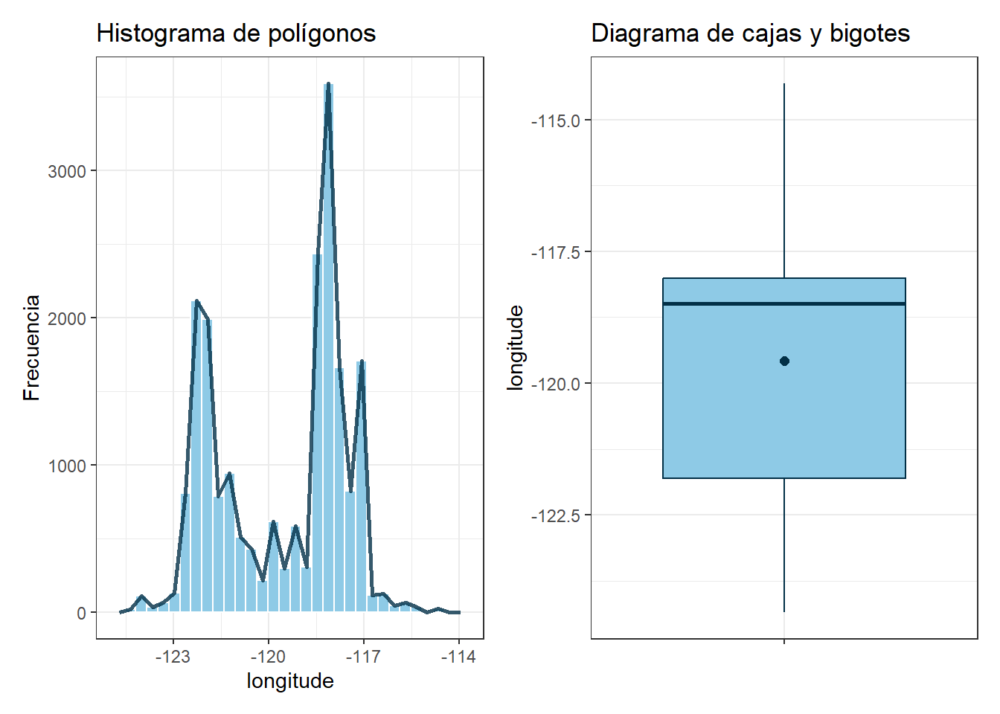
La distribución delongitude presenta una asimetría negativa, evidenciada dado que la media (-120°) es menor que la mediana (-118°), sugiriendo que existen algunas observaciones con longitudes considerablemente más bajas que desplazan la media hacia abajo. Además, la variable cuenta con un carácter bimodal, con una mayor concentración de observaciones en dos zonas específicas —una alrededor de -122° y otra más pronunciada cerca de -118°—, mientras que una menor proporción de datos corresponde a los valores intermedios y a los extremos del rango. Esta característica bimodal sugiere que la relación de esta variable con la respuesta podría no ser lineal, por lo que sería importante considerarla durante las etapas posteriores del análisis y modelamiento. Por su parte, el diagrama de cajas y bigotes muestra que el 50% central de los datos (rango intercuartílico) se ubica entre -122° y -118°, coincidiendo sus extremos justamente con las dos zonas de mayor concentración observadas en el histograma de polígonos. Además, se evidencia ausencia de valores atípicos en los extremos de la distribución.
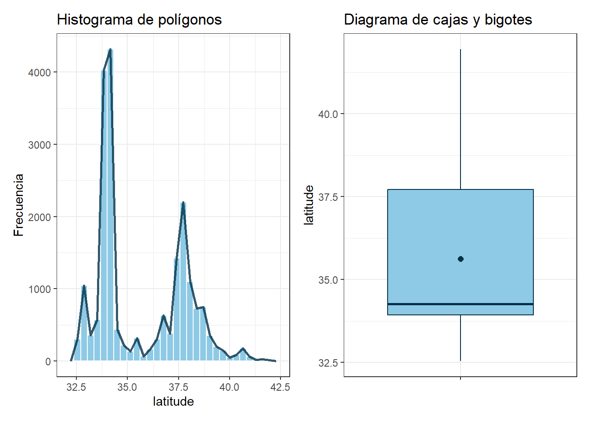
La distribución delatitude presenta una asimetría positiva, evidenciada porque la latitud media (36°) se encuentra por encima de la mediana (34°) en la caja, sugiriendo que, aunque la mayoría de los datos se concentra en valores más bajos, existen algunas observaciones con latitudes considerablemente más altas que desplazan la media hacia arriba. Además, la variable muestra un carácter bimodal, con una mayor concentración de observaciones en dos zonas específicas (una notablemente pronunciada alrededor de 34° y otra menos pronunciada alrededor de 38°), mientras que una menor proporción de datos corresponde a los valores intermedios y a los extremos del rango. Por su parte, el diagrama de cajas y bigotes muestra que el 50% central de los datos (rango intercuartílico) se ubica aproximadamente entre 34° y 38°, coincidiendo sus extremos justamente con las dos zonas de mayor concentración observadas en el histograma de polígonos. Adicionalmente, se evidencia ausencia de valores atípicos en los extremos de la distribución. Esta característica bimodal muestra que la relación de esta variable con la respuesta podría no ser lineal.
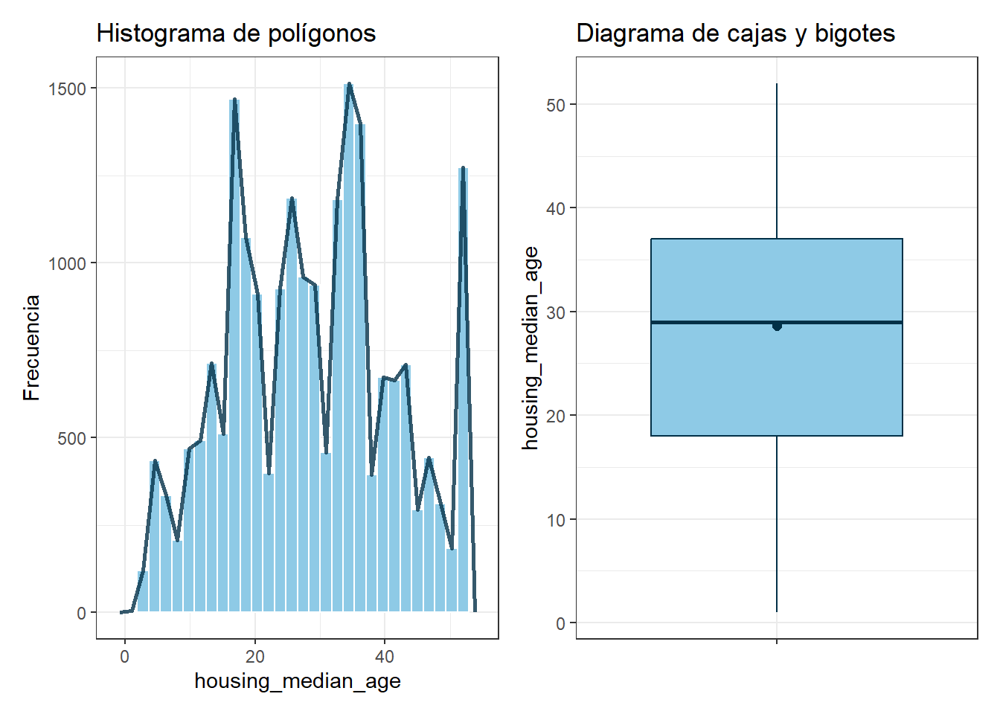
La distribución de housing_median_age presenta una media y mediana muy cercanas (29 años), lo que en principio sugeriría una distribución simétrica. Sin embargo, el histograma no tiene una forma de campana regular, sino varios picos irregulares a lo largo del rango, y particularmente una acumulación notoria de observaciones en el valor máximo (52 años). Esto sugiere un posible efecto de censura o tope en la variable, similar al observado en median_house_value, donde las viviendas con una edad igual o mayor a 52 años parecen haber sido agrupadas en ese límite superior. Por su parte, el diagrama de cajas y bigotes muestra que el 50% central de los datos (rango intercuartílico) se ubica aproximadamente entre 18 y 37 años, y no se evidencian valores atípicos en los extremos de la distribución.
La distribución de total_rooms presenta una fuerte asimetría positiva, evidenciada porque la media (2.636) se encuentra considerablemente por encima de la mediana (2.127), sugiriendo que existen zonas con un número de habitaciones notablemente elevado que desplazan la media hacia arriba. El histograma muestra un pico marcado en valores bajos, seguido de una larga cola hacia la derecha que se extiende hasta cerca de 40.000. El diagrama de cajas y bigotes confirma esta asimetría, con el 50% central de los datos (rango intercuartílico) ubicado entre 1.448 y 3.148, y evidencia además una gran cantidad de valores atípicos por encima del bigote superior, lo cual refuerza la presencia de zonas con un número de habitaciones muy por fuera del comportamiento típico del resto de las observaciones.
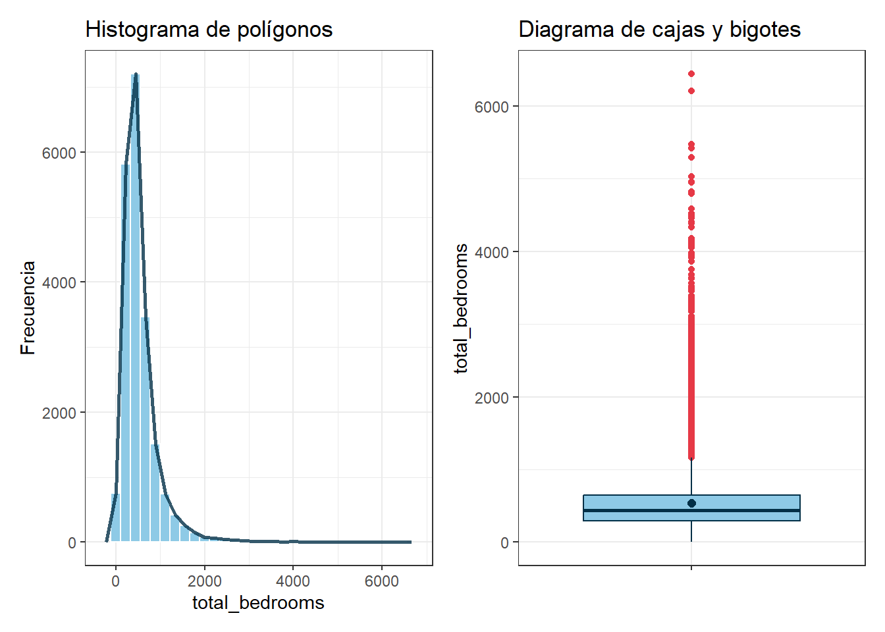
La distribución de total_bedrooms presenta una fuerte asimetría positiva, evidenciada porque la media (538) se encuentra por encima de la mediana (438), sugiriendo que existen zonas con un número de dormitorios notablemente elevado que desplazan la media hacia arriba. El histograma muestra un pico marcado en valores bajos, seguido de una larga cola hacia la derecha que se extiende hasta cerca de 6.500. El diagrama de cajas y bigotes confirma esta asimetría, con el 50% central de los datos (rango intercuartílico) ubicado entre 297 y 643, y evidencia además una considerable cantidad de valores atípicos por encima del bigote superior, lo cual refuerza la presencia de zonas con un número de dormitorios muy por fuera del comportamiento típico del resto de las observaciones.
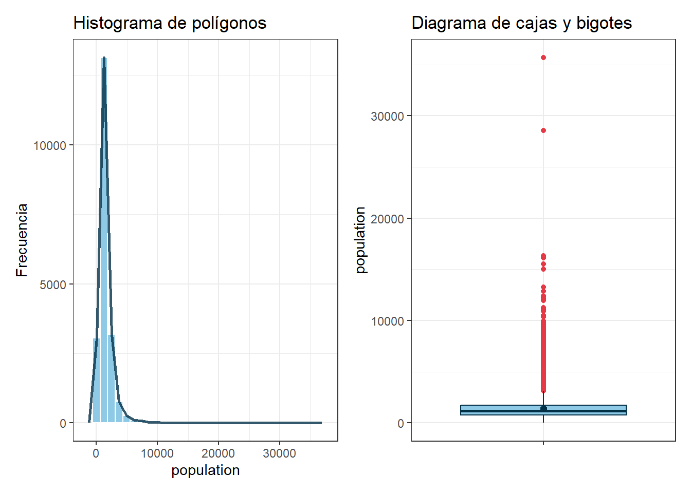
La distribución depopulation presenta una fuerte asimetría positiva, evidenciada porque la media (1.425) se encuentra por encima de la mediana (1.166), sugiriendo que existen zonas con una población notablemente elevada que desplazan la media hacia arriba. El histograma muestra un pico muy pronunciado en valores bajos, seguido de una larga cola hacia la derecha que se extiende hasta cerca de 35.000. El diagrama de cajas y bigotes confirma esta asimetría, con el 50% central de los datos (rango intercuartílico) ubicado entre 787 y 1.725, y evidencia además una gran cantidad de valores atípicos por encima del bigote superior, incluyendo una observación extrema cercana a los 30.000, lo cual refuerza la presencia de zonas con una población muy por fuera del comportamiento típico del resto de las observaciones.
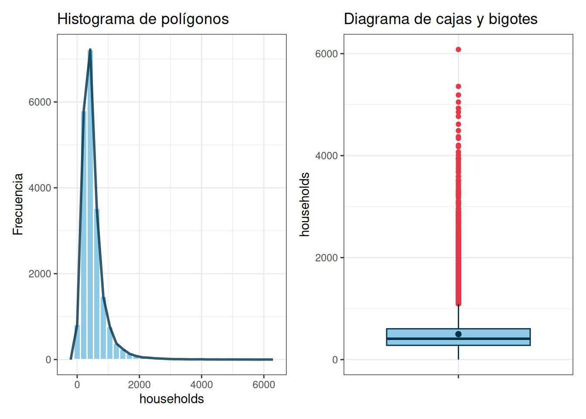
La distribución de households presenta una fuerte asimetría positiva, evidenciada porque la media (500) se encuentra por encima de la mediana (409), sugiriendo que existen zonas con un número de hogares notablemente elevado que desplazan la media hacia arriba. El histograma muestra un pico marcado en valores bajos, seguido de una larga cola hacia la derecha que se extiende hasta cerca de 6.000. El diagrama de cajas y bigotes confirma esta asimetría, con el 50% central de los datos (rango intercuartílico) ubicado entre 280 y 605, y evidencia además una considerable cantidad de valores atípicos por encima del bigote superior, lo cual refuerza la presencia de zonas con un número de hogares muy por fuera del comportamiento típico del resto de las observaciones.
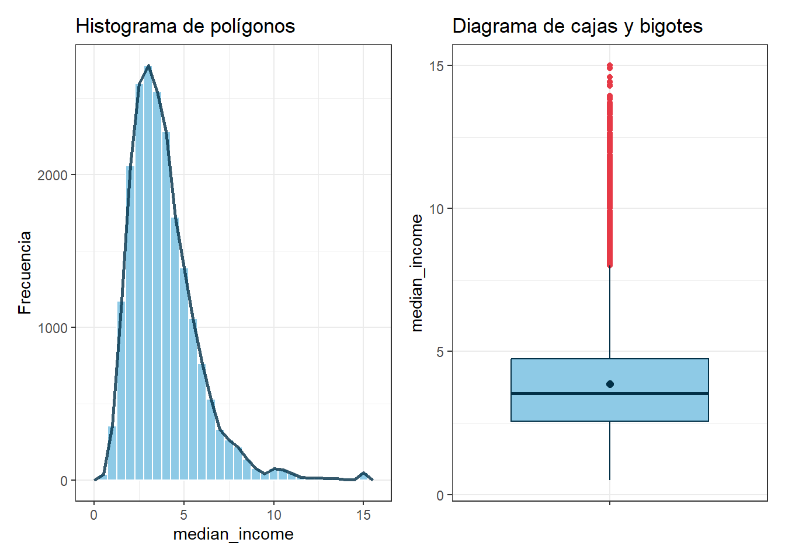
La distribución demedian_income presenta una asimetría positiva, evidenciada porque la media (3,87) se encuentra por encima de la mediana (3,53), sugiriendo que existen zonas con un ingreso notablemente elevado que desplazan la media hacia arriba. El histograma muestra un pico pronunciado en valores medios-bajos, seguido de una cola hacia la derecha que se extiende hasta cerca de 15. El diagrama de cajas y bigotes confirma esta asimetría, con el 50% central de los datos (rango intercuartílico) ubicado entre 2,56 y 4,74, y evidencia además una considerable cantidad de valores atípicos por encima del bigote superior, lo cual refuerza la presencia de zonas con ingresos notablemente más altos que el resto de las observaciones.
1.3 Análisis exploratorio bivariado
plot_dispersión_respuesta <- function(df, var, var_label) {
df %>%
ggplot(aes(x = .data[[var]], y = median_house_value)) +
geom_point(alpha = 0.4, color = "#1E90FF") +
geom_smooth(method = "lm", formula = y ~ x, se = FALSE, color = "red") +
labs(
x = var_label,
y = "Valor medio de la vivienda (USD)"
) +
theme_bw() +
facet_grid(. ~ paste("Dispersión entre", var_label, "y el valor medio de las viviendas"))
} Los puntos muestran una tendencia ascendente clara: a mayor ingreso medio, mayor valor medio de la vivienda. La mayoría de las observaciones se concentra entre ingresos de 2 a 6, con valores por debajo de 400.000 USD.
Los puntos muestran una tendencia ascendente clara: a mayor ingreso medio, mayor valor medio de la vivienda. La mayoría de las observaciones se concentra entre ingresos de 2 a 6, con valores por debajo de 400.000 USD.
La dispersión aumenta con el ingreso, es decir, en zonas de mayores ingresos hay más variabilidad en los precios. También se nota una acumulación de puntos en 500,000 USD, el límite superior del dataset, lo que sugiere censura en la variable objetivo.
En general, la relación es positiva, aproximadamente lineal, y una de las más fuertes del dataset, lo que evidencia la importancia de median_income para el desarrollo del futuro modelo.
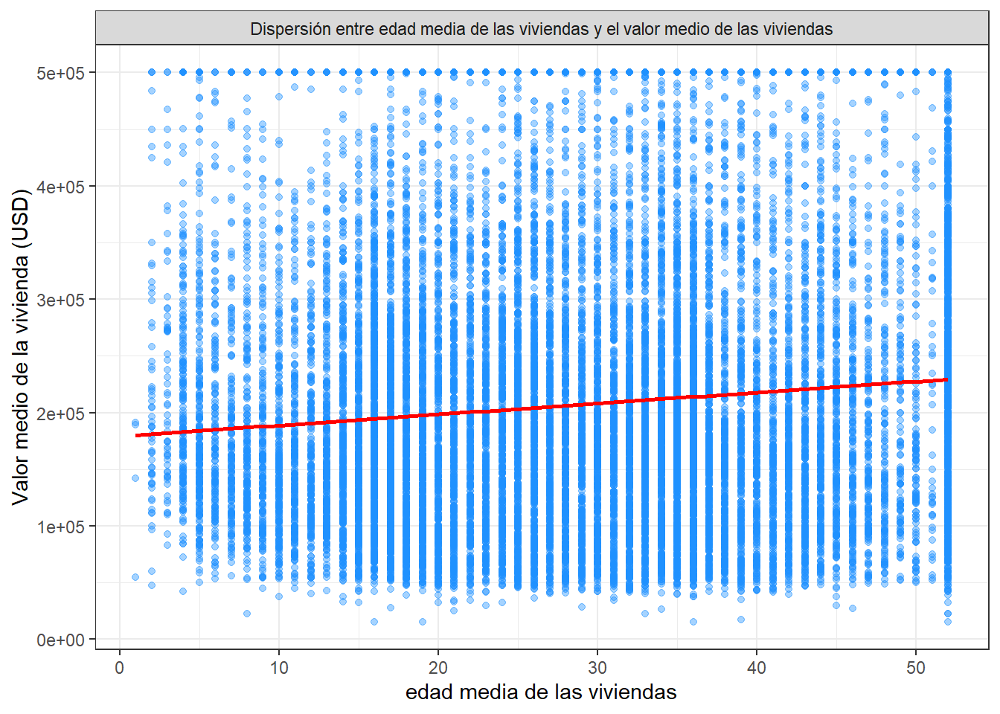
Los puntos no muestran mucha información, puesto que se evidencia una gran cantidad de ruido, con lo cual resulta complejo encontrar una tendencia lineal entre las variableshousing_median_age y median_house_value. La línea de regresión sugiere una pendiente positiva muy leve, indicando que a mayor edad de la vivienda hay un ligero incremento en su valor medio, aunque esta relación es débil.
Se observa una dispersión vertical muy amplia y similar en casi todos los valores de edad, lo que indica que housing_median_age por sí sola no explica bien las variaciones en median_house_value. Por tanto, esta variable probablemente tendrá un poder predictivo bajo en los modelos de regresión.
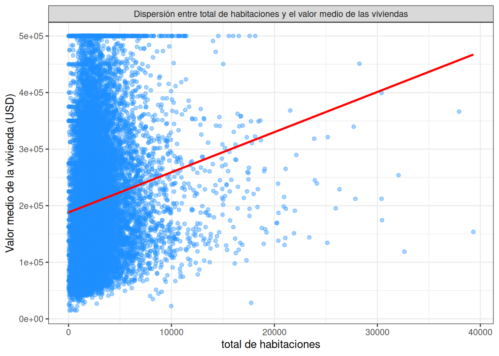
total_rooms muestra una relación positiva débil con median_house_value. La mayoría de los datos se concentra en valores bajos (menos de 5000), con bastante ruido vertical.
Se observan outliers con valores muy altos de total_rooms (hasta cerca de 40,000) que parecen seguir la tendencia ascendente de la línea de regresión. Aun así, la enorme dispersión en el grueso de los datos sugiere que esta variable tiene una capacidad para predecir la variable respuesta de forma individual. Además, estos valores extremos podrían estar asociados a zonas censales de mayor tamaño geográfico, lo que amerita revisión antes de incluirla directamente en el modelo.
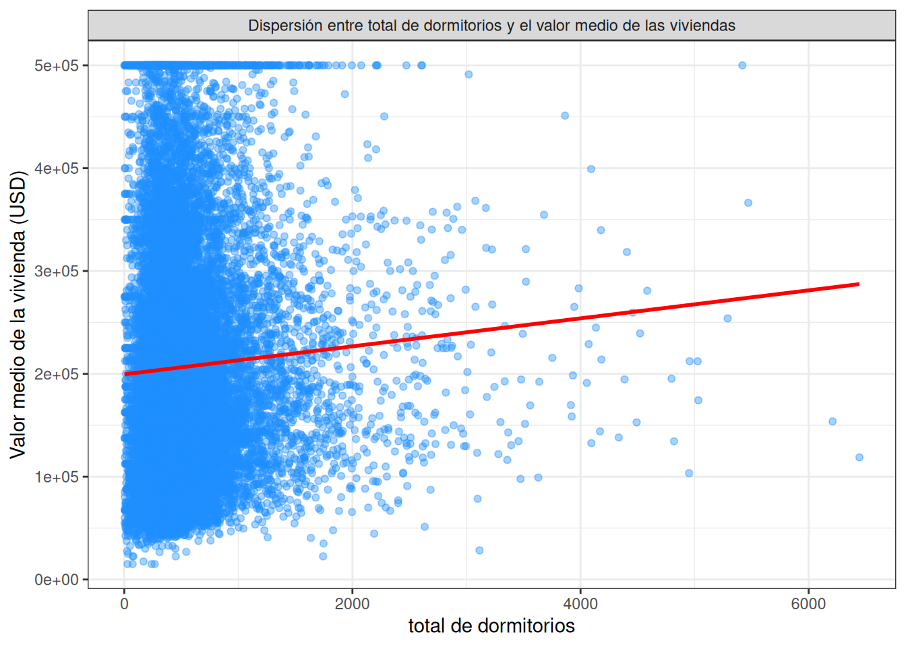
Se evidencia una relación positiva débil entretotal_bedrooms y median_house_value. La mayoría de las observaciones se concentra en valores bajos de dormitorios (menos de 1000), con alta dispersión vertical en ese rango, lo que dificulta ver una tendencia clara.
Existen algunos puntos atípicos con valores muy altos de total_bedrooms (por encima de 4000), pero son pocos y no parecen seguir el patrón general. La pendiente positiva leve indica que esta variable, por sí sola, no sería capaz de predecir la variabilidad de la variable respuesta. Asimismo, su comportamiento sugiere que podría estar altamente correlacionada con otras variables del conjunto de datos, como total_rooms o households.
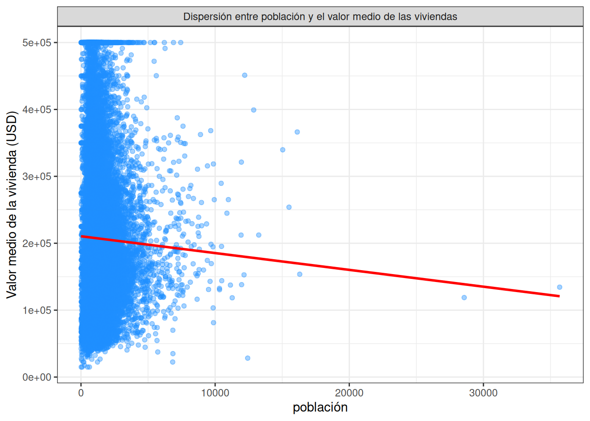
population presenta una relación negativa muy leve con median_house_value, casi plana. La gran mayoría de las observaciones se concentra en valores bajos de población (menos de 5000), con una dispersión vertical muy amplia que impide identificar un patrón claro.Hay pocos puntos con población alta (por encima de 10,000) y estos tienden a tener valores de vivienda más bajos, lo que podría reflejar zonas densamente pobladas con menor valor promedio por unidad. En general, esta variable parece tener un poder predictivo bajo por sí sola. Adicionalmente, este comportamiento podría estar relacionado con dinámicas urbanas particulares, donde una mayor densidad poblacional no necesariamente implica viviendas de mayor valor.
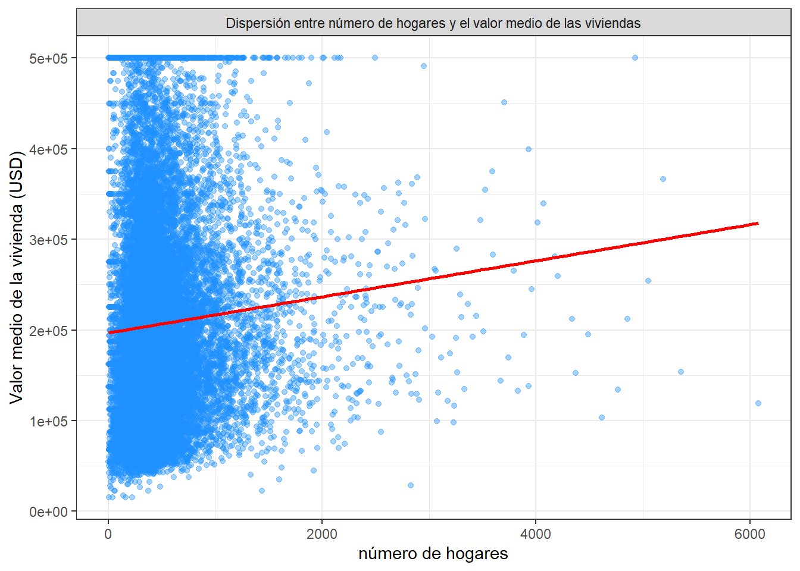
households muestra un comportamiento similar al de total_rooms y total_bedrooms: una relación positiva débil, con la mayoría de los puntos concentrados en valores bajos (menos de 2000) y alta dispersión vertical.Los pocos valores atípicos con número de hogares alto (por encima de 4000) tienden a acompañar valores de vivienda más altos, en línea con la tendencia de la recta. Sin embargo, el ruido generalizado sugiere que, individualmente, esta variable aporta poca información predictiva. Además, esta similitud con total_rooms y total_bedrooms sugiere una posible multicolinealidad entre estas tres variables, aspecto que deberá evaluarse más adelante.
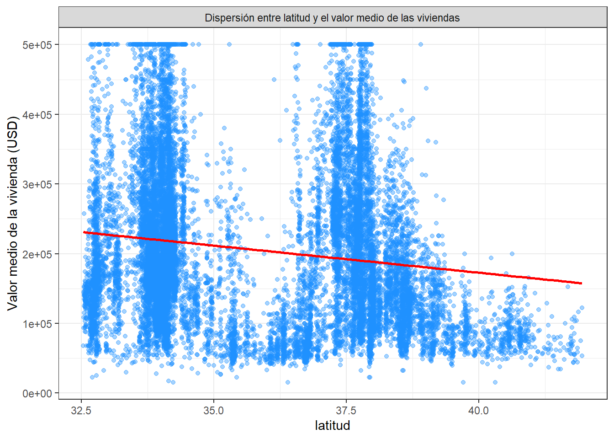
Se observa una relación negativa débil entrelatitude y median_house_value: a medida que aumenta la latitud, el valor medio de las viviendas tiende a disminuir levemente. Los puntos muestran una distribución muy concentrada en ciertas franjas (alrededor de 34° y 37°-38°), correspondientes a zonas densamente pobladas como Los Ángeles y el área de la Bahía de San Francisco, con valores más altos ahí.
La dispersión vertical es amplia en casi todos los niveles de latitud, y se mantiene la acumulación de puntos en 500,000 USD (límite superior censurado). En general, latitude por sí sola tiene un poder explicativo moderado, pero su valor real probablemente esté en combinación con longitude para capturar efectos geográficos/regionales.
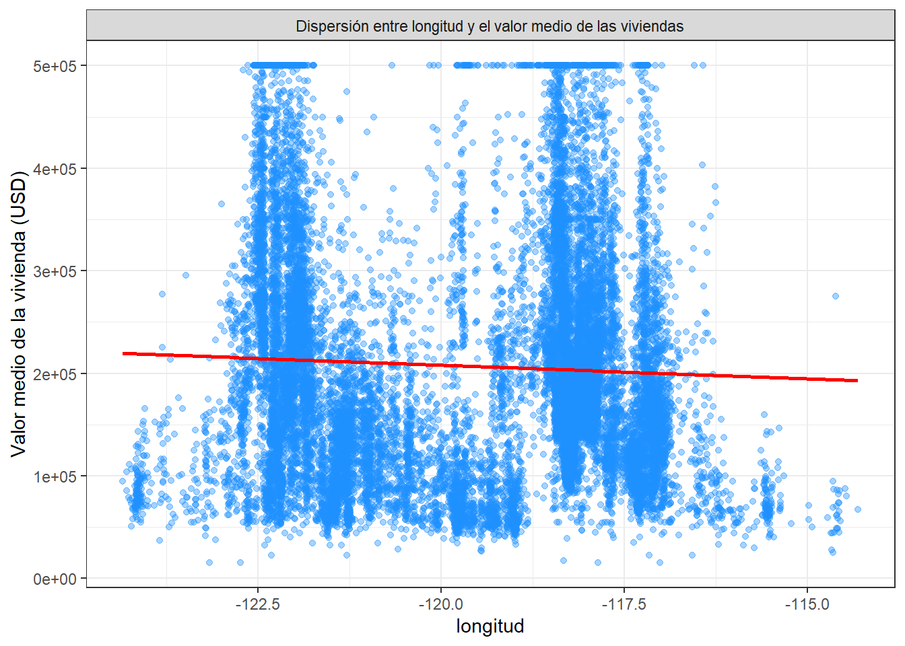
La relación entrelongitude y median_house_value también es negativa y débil, similar a la de latitud. Los puntos se concentran en dos franjas verticales marcadas (cerca de -122° y -118°), que corresponden a las mismas zonas urbanas de alta densidad.
Al igual que con latitud, hay una fuerte dispersión vertical y acumulación en el límite superior de 500,000 USD. Esto sugiere que longitude aporta información geográfica relevante, pero de forma aislada tiene poca capacidad predictiva lineal; su combinación con latitude podría ser más útil para el modelo de regresión.
Ahora veamos la variable ocean_proximity
df %>%
count(ocean_proximity, name = "n")%>%
mutate(Porcentaje = round(n/sum(n)*100, 2),
Variable = 'ocean_proximity',
Categoria = as.character(ocean_proximity))%>%
select(Variable, Categoria, n, Porcentaje) -> tabla_ocean
tabla_ocean## Variable Categoria n Porcentaje
## 1 ocean_proximity <1H OCEAN 9136 44.26
## 2 ocean_proximity INLAND 6551 31.74
## 3 ocean_proximity ISLAND 5 0.02
## 4 ocean_proximity NEAR BAY 2290 11.09
## 5 ocean_proximity NEAR OCEAN 2658 12.88La distribución de ocean_proximity muestra cinco categorías de tamaño muy desigual: la mayor parte de los bloques censales se concentra en INLAND y <1H OCEAN, que conjuntamente superan el 80% de las observaciones, mientras que ISLAND y NEAR BAY son marcadamente minoritarias. Este desbalance implica que los promedios calculados para los grupos pequeños tienen mayor incertidumbre, y que un modelo que incluya esta variable estimará con precisión las categorías dominantes y con menor precisión las minoritarias.
df %>%
count(ocean_proximity, name = "n")%>%
mutate(Porcentaje = round(n/sum(n)*100, 2),
Etiqueta = paste0(n, " (", Porcentaje, "%)")) -> tabla_ocean_b
tabla_ocean_b %>%
ggplot(aes(x = ocean_proximity, y = n))+
geom_col(fill = "#008B8B", width = 0.6)+
geom_text(aes(label = Etiqueta), vjust = -0.5, size = 4.5)+
facet_wrap(~'Distribución de la variable ocean proximity')+
scale_y_continuous(expand = expansion(mult = c(0, 0.15)))+
theme_bw()
El gráfico de barras confirma el desbalance descrito: las categorías INLAND y <1H OCEAN dominan claramente, mientras que ISLAND y NEAR BAY apenas alcanzan una proporción visible. Este patrón es geográficamente esperable: California es una región mayoritariamente de costa e interior con muy pocas islas, de modo que ISLAND corresponde a zonas muy específicas. En síntesis, la variable es informativa pero altamente desbalanceada, lo cual condiciona su uso en modelos lineales y obliga a vigilar las estimaciones de los niveles pequeños.
Ahora comparemos el valor medio de la vivienda según la aproximidad al oceano.
df %>%
group_by(ocean_proximity) %>%
summarise(n = length(median_house_value),
media = mean(median_house_value),
sd = sd(median_house_value),
mediana = median(median_house_value),
RIC = IQR(median_house_value),
Q1 = quantile(median_house_value, 0.25),
Q3 = quantile(median_house_value, 0.75),
minimo = min(median_house_value),
maximo = max(median_house_value),
curtosis = kurtosis(median_house_value),
Coef_asim = skewness(median_house_value))## # A tibble: 5 × 12
## ocean_proximity n media sd mediana RIC Q1 Q3 minimo maximo
## <fct> <int> <dbl> <dbl> <dbl> <dbl> <dbl> <dbl> <dbl> <dbl>
## 1 <1H OCEAN 9136 2.40e5 1.06e5 214850 125000 164100 289100 17500 500001
## 2 INLAND 6551 1.25e5 7.00e4 108500 71450 77500 148950 14999 500001
## 3 ISLAND 5 3.80e5 8.06e4 414700 150000 300000 450000 287500 450000
## 4 NEAR BAY 2290 2.59e5 1.23e5 233800 183200 162500 345700 22500 500001
## 5 NEAR OCEAN 2658 2.49e5 1.22e5 229450 172750 150000 322750 22500 500001
## # ℹ 2 more variables: curtosis <dbl>, Coef_asim <dbl>El resumen por categoría revela diferencias claras en el valor medio de la vivienda según la proximidad al océano: NEAR BAY y <1H OCEAN presentan los valores medios más altos, INLAND se ubica en el extremo inferior, y NEAR OCEAN e ISLAND ocupan posiciones intermedias. Además, la desviación estándar es considerable en todas las categorías, lo cual indica que la proximidad al océano explica parte de la variabilidad pero no la determina por completo. En síntesis, existe una relación entre proximidad al océano y valor de la vivienda, es decir, las zonas cercanas a la bahía y a la costa tienden a ser más costosas, aunque la gran dispersión interna de cada grupo sugiere que otras variables, como el ingreso, explican la mayor parte de la variación.
Veamos un gráfico de cajas y bigotes
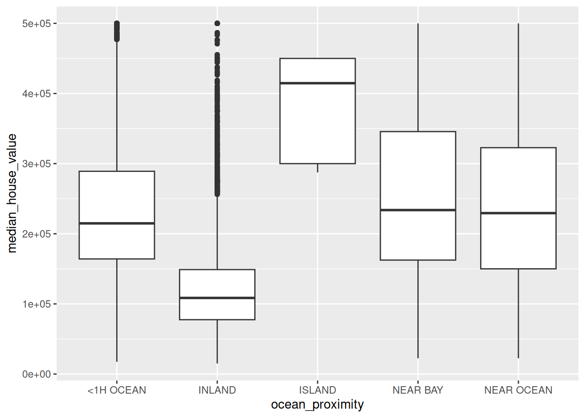
El diagrama de cajas por categoría corrobora el patrón anterior: los boxplots de NEAR BAY y <1H OCEAN se ubican en niveles superiores, mientras que INLAND presenta el nivel más bajo, con medianas que separan de manera clara los grupos. Aun así, los bigotes se solapan ampliamente entre categorías y todas exhiben numerosos valores atípicos superiores, lo cual refuerza que la proximidad al océano es un factor asociado al valor de la vivienda pero no un determinante único. En síntesis, la variable aporta información de agrupación útil, particularmente para distinguir las zonas más costosas del interior.Seguidamente, crearemos una función para analizar cada pareja de variables características numéricas
graf_dispersion <- function(var_x, var_y) {
df %>%
ggplot(aes(x = .data[[var_x]], y = .data[[var_y]])) +
geom_point(alpha = 0.4, color = 'darkblue') +
geom_smooth(method = "lm", formula = y ~ x, se = FALSE, color = "red") +
theme_bw()
}Gráficos de dispersión: independientes numéricas vs independientes numéricas.
Longitud vs Latitud:
 Podemos observar una marcada tendencia negativa en el gráfico de dispersión, esto señala que conforme aumenta el valor de la Longitud, el valor de la Latitud se ve disminuido. Seguidamente, podemos notar que no tiene una concentración clara de los datos más allá de cuando está entre los 34° en Latitud y -118° en Longitud ó cuando está entre 37°-38° Latitud y -122° en Longitud.
Podemos observar una marcada tendencia negativa en el gráfico de dispersión, esto señala que conforme aumenta el valor de la Longitud, el valor de la Latitud se ve disminuido. Seguidamente, podemos notar que no tiene una concentración clara de los datos más allá de cuando está entre los 34° en Latitud y -118° en Longitud ó cuando está entre 37°-38° Latitud y -122° en Longitud.
Está claro que, aunque en menor medida que otros gráficos de dispersión, la variabilidad de los datos de latitud aumenta conforme disminuye la longitud, lo cual sugiere que en California la zona Sur es donde es más apto o más rentable la construcción de viviendas.
En síntesis, la relación entre Latitud y Longitud es negativa, con tendencia negativa y aproximandamente lineal aunque con una ligera curva. Lo cual sugiere la independencia de estas dos variables.
Longitud vs Edad media de las casas:

En este gráfico no se observa una tendencia clara ni marcada, la nube de puntos se distribuye en bandas verticales a lo largo de casi todo el rango de edad (entre 1 y 52 años). Seguidamente, podemos notar que sí hay una concentración clara de los datos cuando la longitud está entre -122 y -118, coincidiendo con las zonas urbanas más antiguas y densamente construidas.
Está claro que la variabilidad de la edad de las casas no cambia de forma sistemática con la longitud, lo cual sugiere que a la hora de invertir en una zona por su antigüedad de construcción, la posición este-oeste por sí sola no es un criterio útil; conviene mirar la ciudad o el municipio específico.
En síntesis, la relación entre Longitud y Edad media de las casas es prácticamente nula, lo cual sugiere independencia entre estas dos variables.
Longitud vs Total de habitaciones:
 No se observa una tendencia definida en el gráfico de dispersión. Seguidamente, podemos notar que sí hay una concentración clara de los datos entre 0 y 8.000 habitaciones, independientemente del valor de longitud, con valores atípicos que llegan hasta cerca de 40.000 en longitudes puntuales como -122 y -116.
No se observa una tendencia definida en el gráfico de dispersión. Seguidamente, podemos notar que sí hay una concentración clara de los datos entre 0 y 8.000 habitaciones, independientemente del valor de longitud, con valores atípicos que llegan hasta cerca de 40.000 en longitudes puntuales como -122 y -116.
Está claro que la variabilidad del total de habitaciones aumenta considerablemente en esas zonas urbanas específicas, lo cual sugiere que los desarrollos de gran tamaño (edificios, complejos residenciales) se concentran en las metrópolis costeras y no se distribuyen de forma pareja por todo el estado.
En síntesis, la relación entre Longitud y Total de habitaciones es prácticamente nula, lo cual sugiere independencia entre estas dos variables.
Longitud vs Total de dormitorios:

No se observa una tendencia definida. Seguidamente, podemos notar que hay una concentración clara de los datos entre 0 y 1.000 dormitorios, sin importar la longitud, con valores atípicos dispersos en las mismas zonas urbanas de siempre (-122° y -116°).
Está claro que este comportamiento replica exactamente el observado con el total de habitaciones, lo cual sugiere que ambas variables aportan la misma señal de negocio, la oferta de vivienda de mayor tamaño está atada a las zonas metropolitanas, no a la longitud en sí.
En síntesis, la relación entre Longitud y Total de dormitorios es prácticamente nula.
Longitud vs Población:
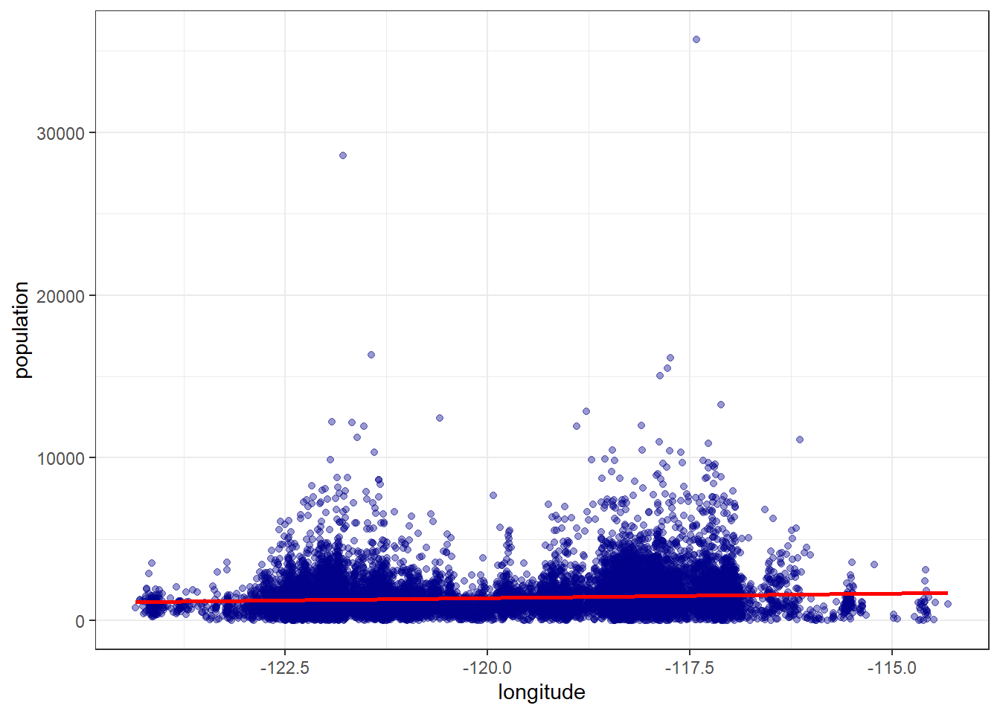
No se evidencia una tendencia clara. Seguidamente, podemos notar que hay una concentración clara de los datos entre 0 y 950 habitantes por bloque censal, con pocos valores atípicos que superan los 20.000 en longitudes puntuales.
Está claro que la variabilidad de la población no depende de la posición este-oeste, sino de si el bloque censal cae en zona urbana o rural, lo cual sugiere que para estimar demanda de vivienda por densidad poblacional, es más útil clasificar por tipo de zona que por coordenada de longitud.
En síntesis, la relación entre Longitud y Población es prácticamente nula, lo cual sugiere independencia entre estas dos variables.
Longitud vs Hogares:
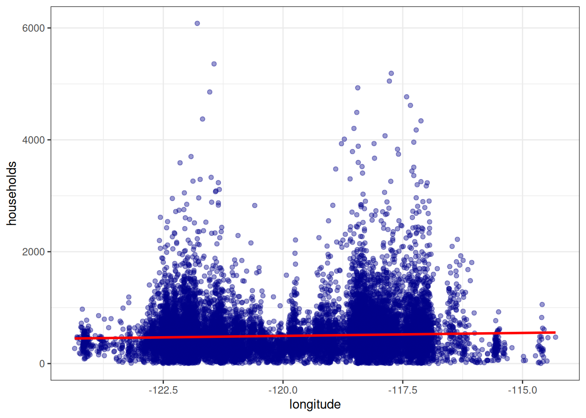
No se observa una tendencia definida. Seguidamente, podemos notar que hay una concentración clara de los datos entre 0 y 1.200 hogares, comportamiento muy similar al de longitud vs población.Está claro que esta ausencia de relación es coherente con lo visto en las demás variables de tamaño poblacional frente a la longitud, lo cual sugiere que la cantidad de hogares por bloque no es un indicador que varíe según el desplazamiento este-oeste del estado.
En síntesis, la relación entre Longitud y Hogares es prácticamente nula.
Longitud vs Ingreso medio:
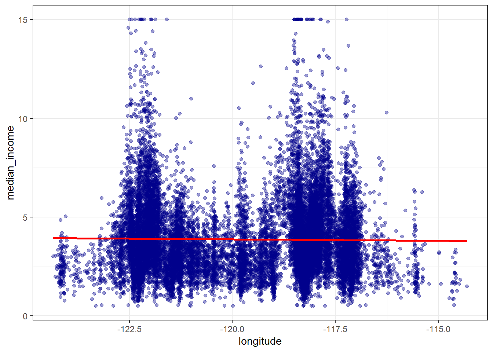
No se observa una tendencia clara ni marcada. Seguidamente, podemos notar que hay una concentración clara de los datos entre 2.5 y 4.8 en ingreso medio, con un límite superior visible cercano a 15, más denso en las longitudes -122.5° y -116°.
Está claro que el nivel de ingreso no varía de forma sistemática según la posición este-oeste, lo cual sugiere que la longitud por sí sola no sirve para segmentar zonas de mayor o menor poder adquisitivo; es la ubicación específica (ciudad, distrito) la que realmente marca la diferencia.
En síntesis, la relación entre Longitud e Ingreso medio es prácticamente nula, lo cual sugiere independencia entre estas dos variables.
Latitud vs Edad media de las casas:
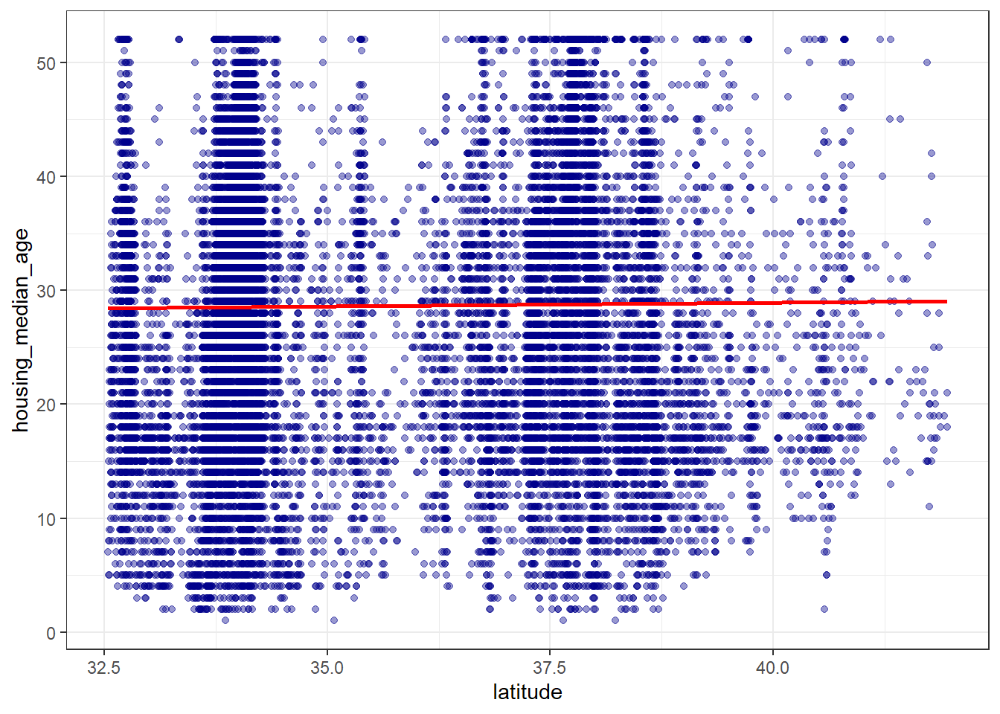
No se observa una tendencia definida. Seguidamente, podemos notar que hay una concentración clara de los datos cuando la latitud está entre 33° y 35° y también entre 37.3° y 39°.En síntesis, la relación entre Latitud y Edad media de las casas es prácticamente nula, lo cual sugiere que la antigüedad de las viviendas no depende de la posición norte-sur del estado.
Latitud vs Total de habitaciones:
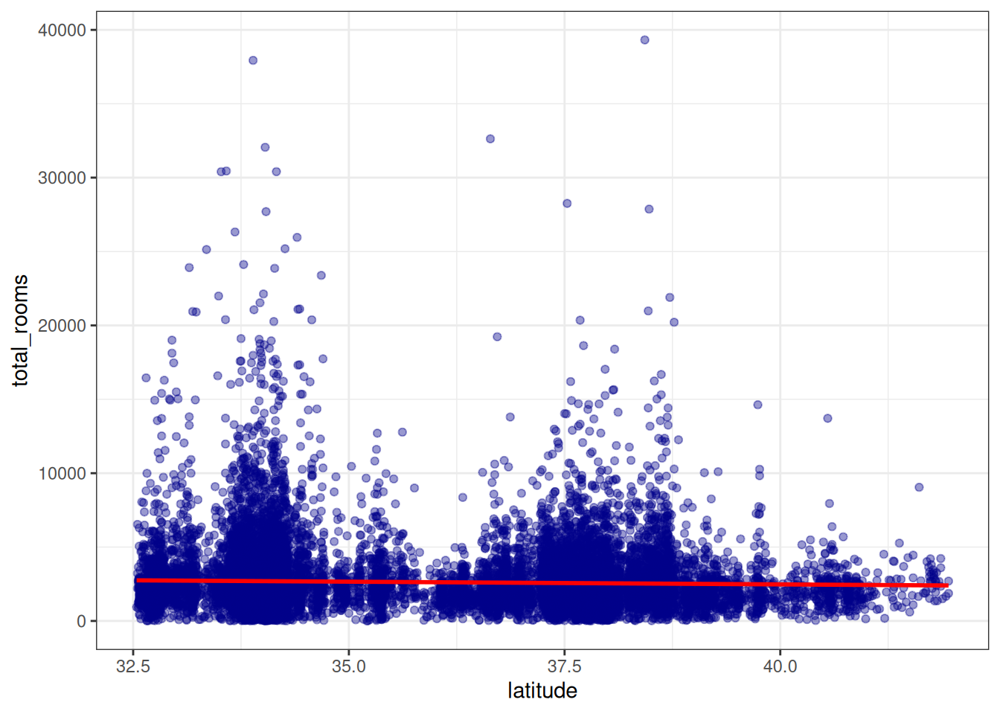
No se observa una tendencia clara. Seguidamente, podemos notar que hay una concentración clara de los datos entre 0 y 5.00 habitaciones, con valores atípicos notorios en las latitudes 34° y 38°.Está claro que la variabilidad aumenta en esas franjas específicas, lo cual sugiere que la oferta de viviendas grandes se concentra en las mismas latitudes.
En síntesis, la relación entre Latitud y Total de habitaciones es prácticamente nula.
Latitud vs Total de dormitorios:
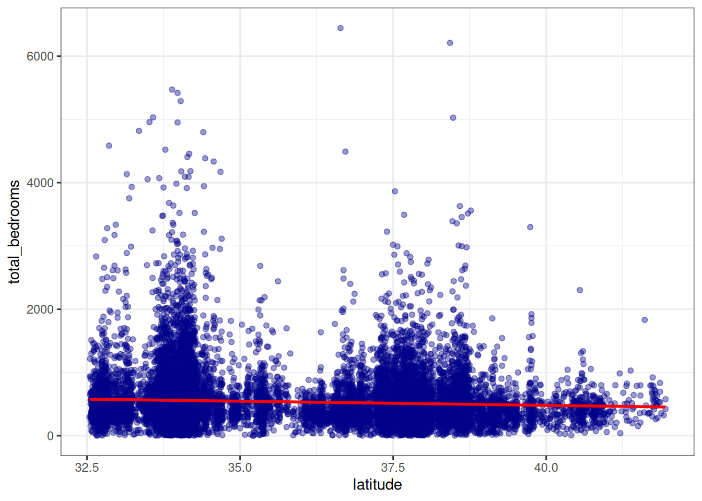
No se observa una tendencia definida. Seguidamente, podemos notar que hay una concentración clara de los datos entre 0 y 500 dormitorios, replicando el mismo patrón que la latitud vs total de habitaciones.Está claro que ambas variables se comportan de forma prácticamente idéntica frente a la latitud, lo cual sugiere que, de nuevo, la variable relevante no es la posición geográfica en sí, sino si el bloque pertenece a una zona metropolitana o rural.
En síntesis, la relación entre Latitud y Total de dormitorios es prácticamente nula.
Latitud vs Población:
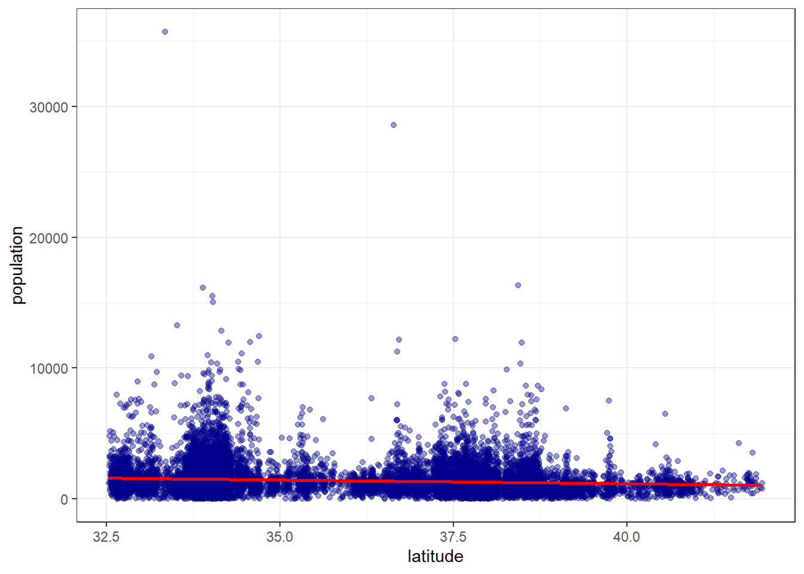
No se observa una tendencia clara. Seguidamente, podemos notar que hay una concentración clara de los datos entre 0 y 1.200 habitantes, con algunos valores atípicos elevados en las latitudes 33 y 38.Está claro que la densidad poblacional no varía de forma sistemática con la latitud, lo cual sugiere que para fines de planeación urbana o comercial, es más útil identificar directamente las zonas metropolitanas que usar la latitud.
En síntesis, la relación entre Latitud y Población es prácticamente nula.
Latitud vs Hogares:
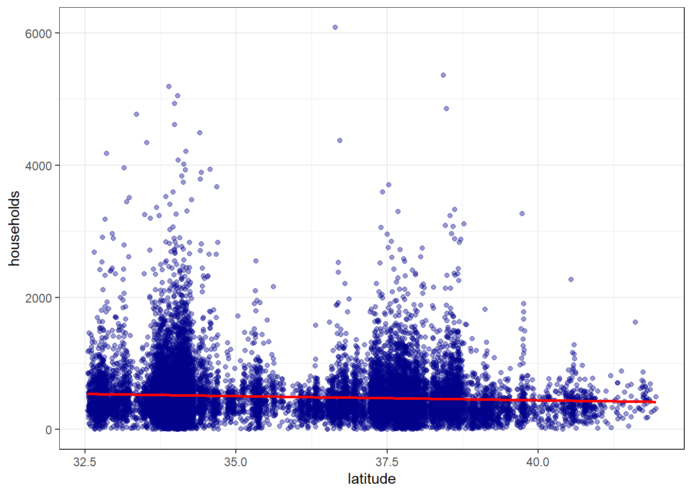
No se observa una tendencia definida. Seguidamente, podemos notar que hay una concentración clara de los datos entre 0 y 500 hogares, comportamiento equivalente al de latitud vs población.Está claro que la ausencia de relación es consistente con las demás variables de tamaño poblacional, lo cual sugiere que la latitud no aporta valor predictivo sobre la cantidad de hogares de una zona.
En síntesis, la relación entre Latitud y Hogares es prácticamente nula.
Latitud vs Ingreso medio:
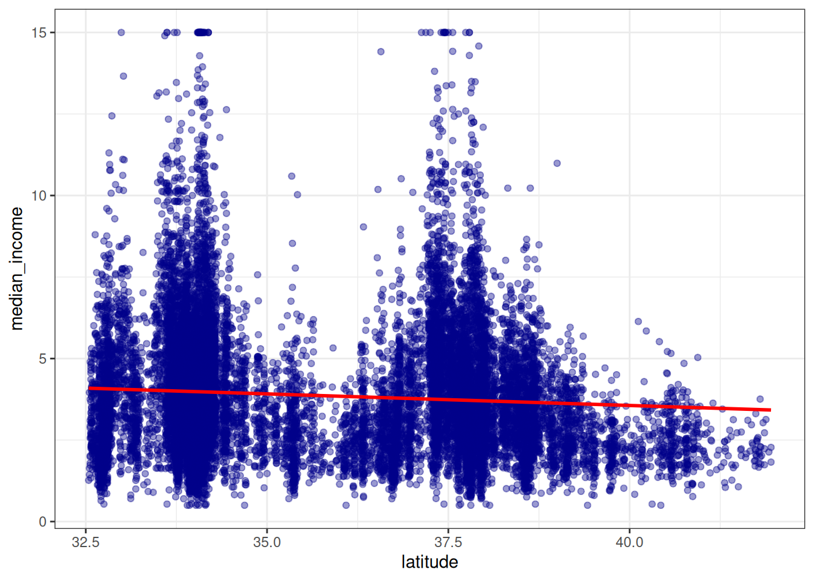
No se observa una tendencia clara. Seguidamente, podemos notar que hay una concentración clara de los datos entre 0 y 5 en ingreso medio, más denso en las latitudes 33°-34° y 37°-38°.Está claro que el nivel de ingreso no depende de la posición norte-sur por sí sola, lo cual sugiere que tanto el norte como el sur del estado tienen zonas de ingresos altos y bajos.
En síntesis, la relación entre Latitud e Ingreso medio es prácticamente nula.
Edad media de las casas vs Total de habitaciones:
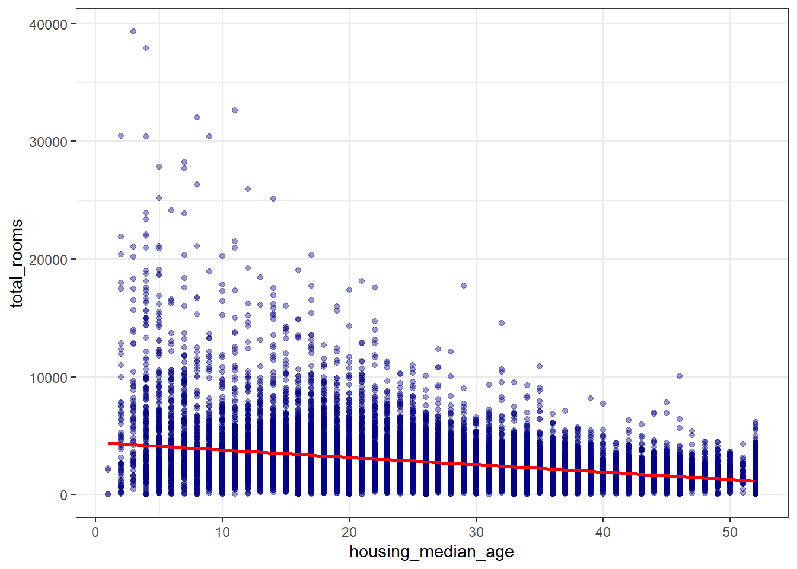
Podemos observar una leve tendencia negativa en el gráfico de dispersión, esto señala que conforme aumenta el valor de la Edad media de las casas, el valor del Total de habitaciones se ve ligeramente disminuido. Seguidamente, podemos notar que no tiene una concentración clara de los datos más allá de cuando está entre 3 y 52 años de edad y entre 0 y 5.000 habitaciones.Está claro que, aunque en menor medida que otros gráficos de dispersión, la variabilidad del total de habitaciones disminuye conforme aumenta la edad de la vivienda, lo cual sugiere que las construcciones más recientes tienden a levantarse en bloques de mayor tamaño poblacional, siendo estas zonas potencialmente más atractivas.
En síntesis, la relación entre Edad media de las casas y Total de habitaciones es negativa, con tendencia negativa y débilmente lineal.
Edad media de las casas vs Total de dormitorios:
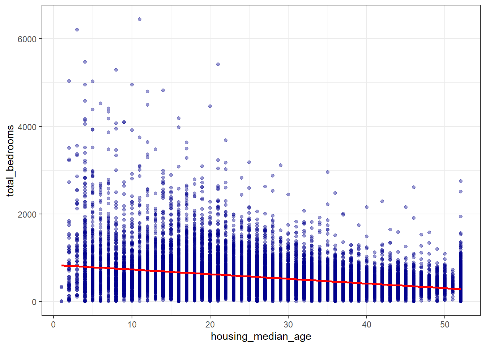
Podemos observar una leve tendencia negativa, esto señala que conforme aumenta la Edad media de las casas, el Total de dormitorios disminuye ligeramente. Seguidamente, podemos notar que hay concentración de datos entre 4 y 52 años y entre 0 y 1.000 dormitorios.Está claro que este comportamiento replica el visto con el total de habitaciones, lo cual sugiere nuevamente que las zonas de construcción más nueva son las que concentran mayor cantidad de habitaciones.
En síntesis, la relación entre Edad media de las casas y Total de dormitorios es negativa, con tendencia negativa y débilmente lineal.
Edad media de las casas vs Población:
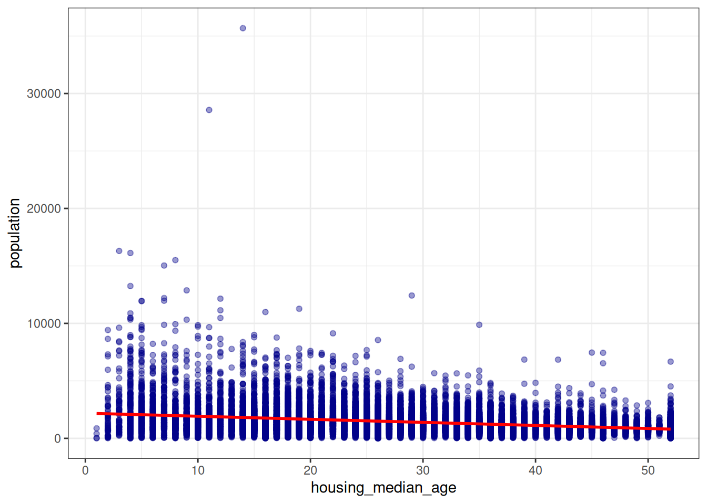
Podemos observar una leve tendencia negativa, esto señala que conforme aumenta la Edad media de las casas, la Población del bloque poblacional disminuye ligeramente. Seguidamente, podemos notar concentración de datos entre 2 y 52 años y entre 0 y 5.000 habitantes.Está claro que las zonas con construcciones más antiguas tienden a estar levemente menos pobladas, lo cual sugiere que estas áreas podrían estar en proceso de despoblamiento o de menor renovación urbana frente a las zonas de construcción más reciente.
En síntesis, la relación entre Edad media de las casas y Población es negativa, con tendencia negativa y débilmente lineal.
Edad media de las casas vs Hogares:
Podemos observar una leve tendencia negativa, esto señala que conforme aumenta la Edad media de las casas, el número de Hogares disminuye ligeramente. Seguidamente, podemos notar concentración de datos entre 2 y 52 años y entre 0 y 900 hogares. Está claro que este patrón es consistente con el observado en población, lo cual sugiere que las zonas más antiguas del estado también concentran menos familias.
En síntesis, la relación entre Edad media de las casas y Hogares es negativa, con tendencia negativa y débilmente lineal.
Edad media de las casas vs Ingreso medio:
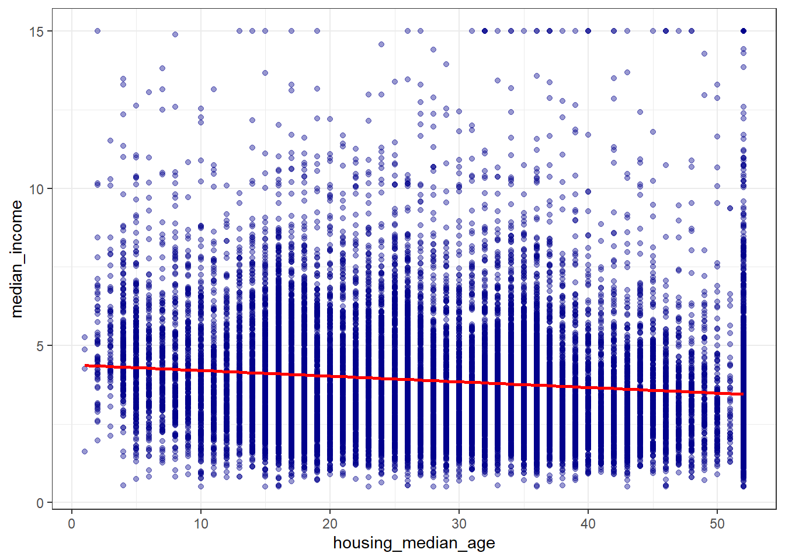
Podemos observar una tendencia negativa leve, apenas perceptible, esto señala que las zonas con viviendas más antiguas tienden a tener un ingreso medio ligeramente menor. Seguidamente, podemos notar que hay concentración de datos entre 10 y 52 años y entre 2.3 y 5 en ingreso medio.Está claro que, a diferencia de las otras variables de tamaño, aquí la variabilidad no cambia mucho con la edad, lo cual sugiere que la antigüedad de la construcción no es un buen predictor por sí solo del nivel socioeconómico de una zona.
En síntesis, la relación entre Edad media de las casas e Ingreso medio es prácticamente nula, lo cual sugiere independencia entre estas dos variables.
Total de habitaciones vs Total de dormitorios:
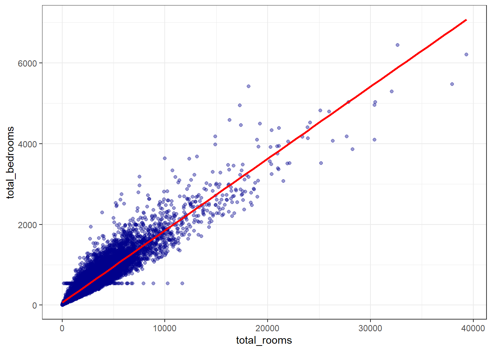
Podemos observar una marcada tendencia positiva en el gráfico de dispersión, esto señala que conforme aumenta el valor del Total de habitaciones, el valor del Total de dormitorios también se ve incrementado. Seguidamente, podemos notar que hay una concentración clara de los datos entre 0 y 7.000 habitaciones y entre 0 y 1.700 dormitorios.Está claro que, a diferencia de los gráficos anteriores, la variabilidad de ambas variables aumenta de forma conjunta y proporcional conforme crecen los valores, lo cual sugiere que basta con conocer el total de habitaciones de una zona para estimar de forma bastante confiable su total de dormitorios.
En síntesis, la relación entre Total de habitaciones y Total de dormitorios es positiva, con tendencia positiva y fuertemente lineal, lo cual sugiere una alta dependencia entre estas dos variables.
Total de habitaciones vs Población:
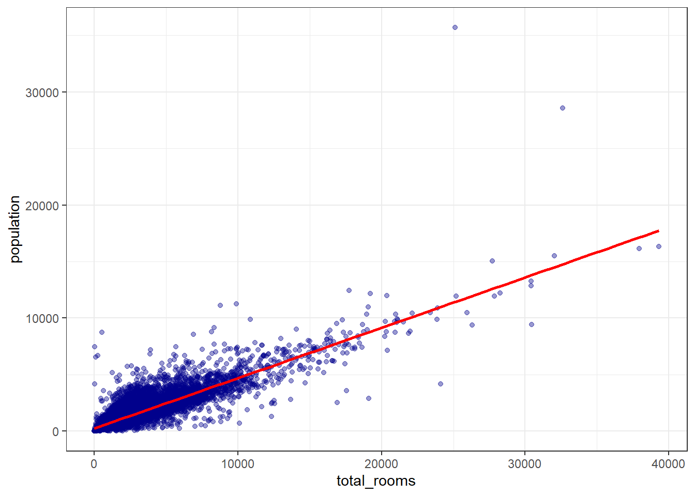
Podemos observar una marcada tendencia positiva, esto señala que conforme aumenta el Total de habitaciones, la Población también se ve incrementada. Seguidamente, podemos notar concentración de datos entre 0 y 11.000 habitaciones y entre 0 y 5.000 habitantes.Está claro que la dispersión se amplía considerablemente en los valores altos de ambas variables, lo cual sugiere que las zonas con mayor número de habitaciones efectivamente logran absorber más población, siendo un buen indicador de capacidad de acogida de un bloque poblacional.
En síntesis, la relación entre Total de habitaciones y Población es positiva, con tendencia positiva y moderadamente lineal, contando con una dependencia moderada-alta.
Total de habitaciones vs Hogares:
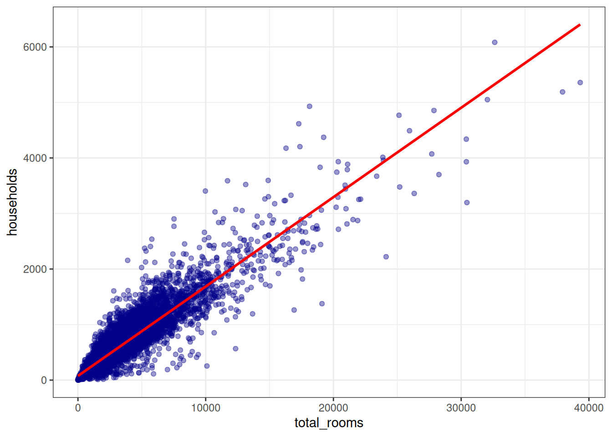
Podemos observar una marcada tendencia positiva, esto señala que conforme aumenta el Total de habitaciones, el número de Hogares también se ve incrementado. Seguidamente, podemos notar concentración de datos entre 0 y 9.000 habitaciones y entre 0 y 1.800 hogares.Está claro que esta es una de las relaciones más fuertes de todo el conjunto de variables, lo cual sugiere que ambas variables aportan prácticamente la misma información sobre el tamaño poblacional, siendo buena candidata para combinarlas en un ratio como habitaciones por hogar en vez de mantenerlas por separado.
En síntesis, la relación entre Total de habitaciones y Hogares es positiva, con tendencia positiva y fuertemente lineal, lo cual sugiere una alta dependencia entre estas dos variables.
Total de habitaciones vs Ingreso medio:
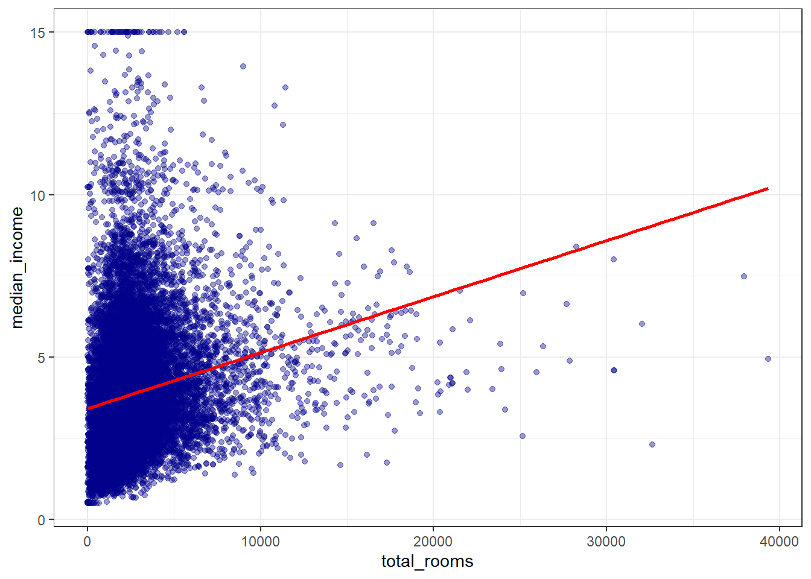
Podemos observar una tendencia positiva leve en el gráfico de dispersión. Seguidamente, podemos notar que no tiene una concentración clara de los datos más allá de cuando está entre 0 y 5.000 habitaciones y entre 0 y 8 en ingreso medio.Está claro que, a diferencia de los gráficos entre variables de tamaño, aquí la variabilidad del ingreso no aumenta de forma proporcional con el total de habitaciones, lo cual sugiere que muchas habitaciones no necesariamente implica residentes de mayor poder adquisitivo, siendo el tamaño de la vivienda y el nivel de ingreso factores relativamente independientes.
En síntesis, la relación entre Total de habitaciones e Ingreso medio es positiva pero débil, lo cual sugiere una dependencia mínima entre estas dos variables.
Total de dormitorios vs Población:
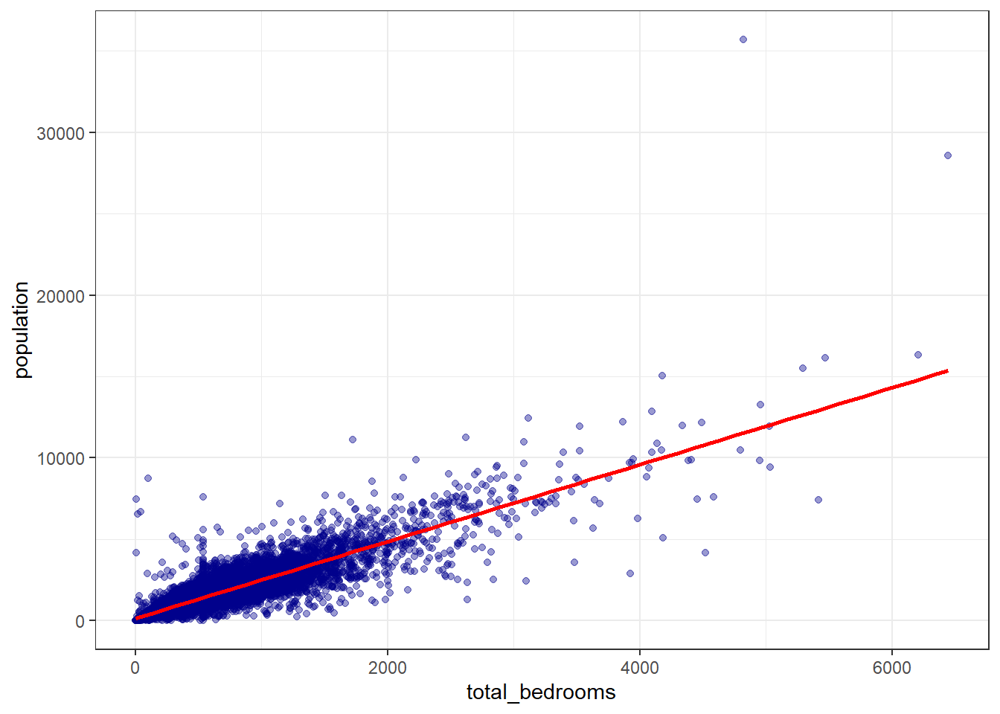
Podemos observar una marcada tendencia positiva, esto señala que conforme aumenta el Total de dormitorios, la Población también se ve incrementada. Seguidamente, podemos notar concentración de datos entre 0 y 1.700 dormitorios y entre 0 y 4.600 habitantes.Está claro que este comportamiento replica el de total de habitaciones vs población, lo cual sugiere que el número de dormitorios disponibles es también un buen indicador de la capacidad para albergar población.
En síntesis, la relación entre Total de dormitorios y Población es positiva, con tendencia positiva y moderadamente lineal.
Total de dormitorios vs Hogares:
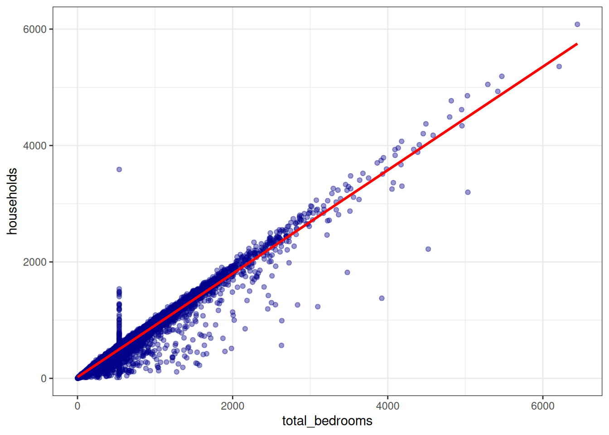
Podemos observar la tendencia positiva más marcada y lineal de todo el conjunto de gráficos, esto señala que conforme aumenta el Total de dormitorios, el número de Hogares aumenta casi en la misma proporción. Seguidamente, podemos notar concentración de datos entre 0 y 2.000 dormitorios y entre 0 y 1.500 hogares.Está claro que ambas variables prácticamente se determinan una a la otra, lo cual sugiere que mantener las dos en un modelo predictivo aportaría información redundante, siendo más eficiente resumirlas en una sola métrica como dormitorios por hogar.
En síntesis, la relación entre Total de dormitorios y Hogares es positiva, con tendencia positiva y casi perfectamente lineal, lo cual sugiere una redundancia muy alta entre estas dos variables.
Total de dormitorios vs Ingreso medio:
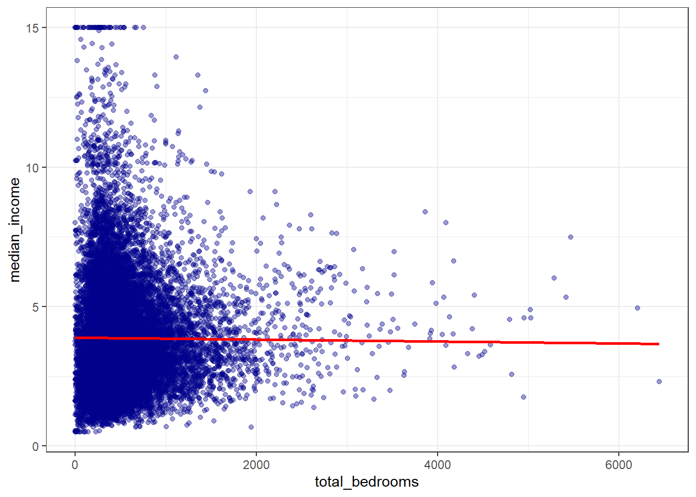
No se observa una tendencia clara en el gráfico de dispersión. Seguidamente, podemos notar que hay concentración de datos entre 0 y 1.600 dormitorios y entre 0 y 7.5 en ingreso medio.Está claro que el nivel de ingreso no depende de la cantidad de dormitorios disponibles en la zona, lo cual sugiere que el poder adquisitivo de los residentes no está condicionado por la cantidad de habitaciones del bloque censal donde viven.
En síntesis, la relación entre Total de dormitorios e Ingreso medio es prácticamente nula, lo cual sugiere independencia entre estas dos variables.
Población vs Hogares:
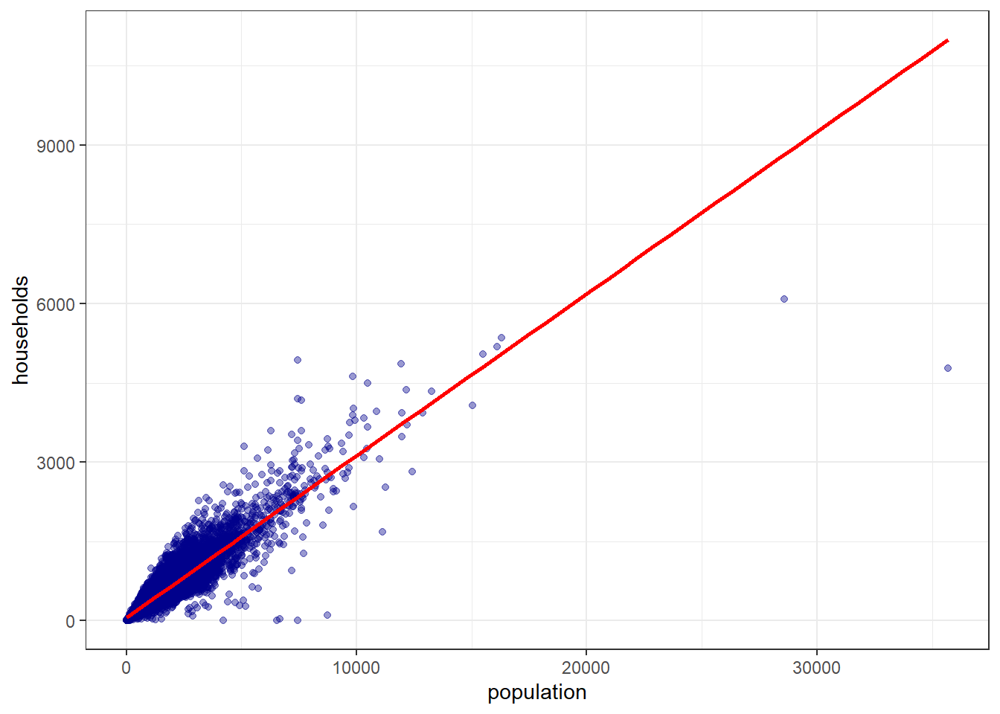
Podemos observar una marcada tendencia positiva y fuertemente lineal, esto señala que conforme aumenta la Población, el número de Hogares aumenta en la misma proporción. Seguidamente, podemos notar concentración de datos entre 0 y 5.000 habitantes y entre 0 y 1.700 hogares.Está claro que esta es una relación totalmente esperable, ya que la población está compuesta directamente por los integrantes de los hogares, lo cual sugiere que esta es, junto con total de dormitorios vs hogares, la pareja más redundante del dataset y una candidata clara para simplificar en la ingeniería de características.
En síntesis, la relación entre Población y Hogares es positiva, con tendencia positiva y fuertemente lineal.
Población vs Ingreso medio:
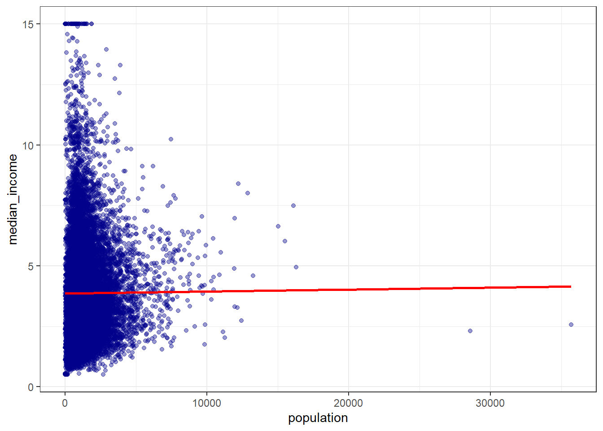
No se observa una tendencia clara en el gráfico de dispersión. Seguidamente, podemos notar que hay concentración de datos entre 0 y 4.000 habitantes y entre 0 y 7 en ingreso medio.Está claro que la densidad poblacional de una zona no está relacionada con su nivel de ingreso, lo cual sugiere que tanto zonas muy pobladas como poco pobladas pueden tener residentes de ingresos altos o bajos.
En síntesis, la relación entre Población e Ingreso medio es prácticamente nula, lo cual sugiere independencia entre estas dos variables.
Hogares vs Ingreso medio:
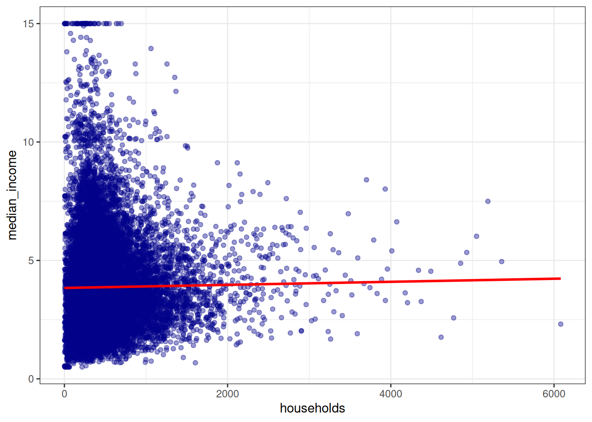
No se observa una tendencia clara en el gráfico de dispersión. Seguidamente, podemos notar que hay concentración de datos entre 0 y 1.200 hogares y entre 0 y 6.5 en ingreso medio.Está claro que la cantidad de hogares de un bloque poblacional no está relacionada con el nivel de ingreso de sus habitantes, lo cual sugiere que el tamaño de la comunidad (en número de hogares) no debe usarse como indicador del nivel socioeconómico de la zona.
En síntesis, la relación entre Hogares e Ingreso medio es prácticamente nula, lo cual sugiere independencia entre estas dos variables.
1.4 Ingeniería de características
Con base en la matriz de correlación, identificamos que total_rooms, total_bedrooms, population y households están altamente correlacionadas entre sí, ya que todas escalan según el tamaño del bloque censal. Para reducir esta redundancia, eliminamos estas 4 variables originales y las combinamos en 4 nuevas variables; habitaciones_por_hogar, dormitorios_por_habitacion, poblacion_por_hogar e ingreso_por_persona.
df <- df %>%
mutate(
rooms_per_household = total_rooms / households,
bedrooms_by_room = total_bedrooms / total_rooms,
population_per_household = population / households,
) %>%
select(-total_rooms, -total_bedrooms, -population, -households)
df %>%
select(rooms_per_household, bedrooms_by_room,
population_per_household)%>%
head()## rooms_per_household bedrooms_by_room population_per_household
## 1 6.984127 0.1465909 2.555556
## 2 6.238137 0.1557966 2.109842
## 3 8.288136 0.1295160 2.802260
## 4 5.817352 0.1844584 2.547945
## 5 6.281853 0.1720959 2.181467
## 6 4.761658 0.2317737 2.139896Histograma y diagrama de cajas: rooms_per_household
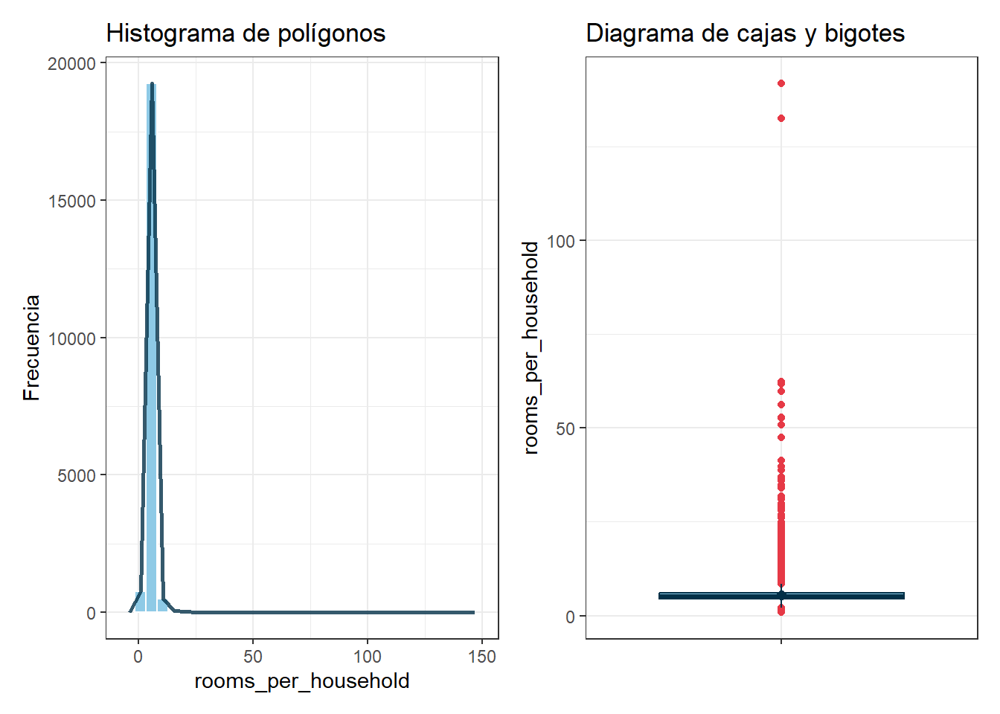
Podemos observar una distribución fuertemente sesgada hacia la derecha, con una concentración extremadamente marcada de los datos entre 0 y 15 habitaciones por hogar aproximadamente (donde se ubica la barra que llega hasta casi 20.000 de frecuencia). Seguidamente, podemos notar en el diagrama de cajas que la caja misma es prácticamente invisible de lo comprimida que está cerca de 0, mientras que existen valores atípicos que se disparan hasta más de 140 habitaciones por hogar. Está claro que estos outliers corresponden a bloques censales con muy pocos hogares registrados (posiblemente 1 o 2) frente a un total de habitaciones desproporcionadamente alto, lo cual distorsiona la escala visual de todo el gráfico. En síntesis, la variable rooms_per_household tiene una distribución muy concentrada y de cola larga, lo cual sugiere que, salvo por unos pocos casos extremos, la mayoría de los hogares en California tienen un número de habitaciones bastante homogéneo y razonable.Histograma y diagrama de cajas: bedrooms_by_room
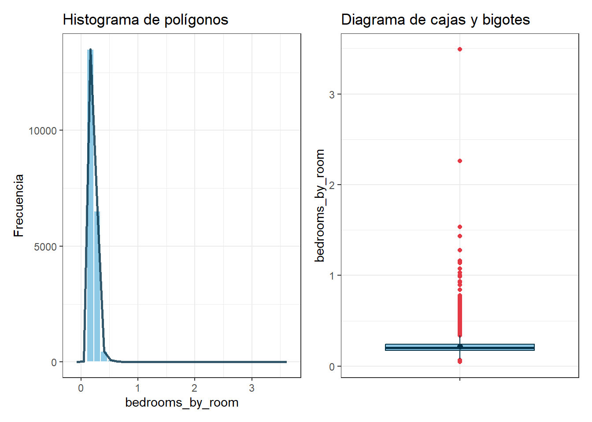
A diferencia de los dos gráficos anteriores, aquí la concentración de los datos es más moderada, ubicándose principalmente entre 0.1 y 0.3 (es decir, entre el 10% y el 30% de las habitaciones de un bloque censal corresponden a dormitorios), lo cual es un valor arquitectónicamente coherente. Seguidamente, podemos notar en el diagrama de cajas que, aunque también existen valores atípicos hacia arriba (hasta cerca de 3.5, lo cual significaría más dormitorios que habitaciones totales, algo lógicamente imposible), la dispersión general es bastante menor que en las otras dos variables. Está claro que un valor de bedrooms_by_room superior a 1 es matemáticamente inconsistente, ya que implicaría que total_bedrooms supera a total_rooms, lo cual sugiere un error de captura en esos registros específicos más que un caso extremo real. En síntesis, la variable bedrooms_by_room es la más estable de las tres, aunque los valores atípicos por encima de 1 deberían filtrarse o corregirse, ya que rompen la lógica misma de la variable (los dormitorios no pueden ser más que el total de habitaciones).Histograma y diagrama de cajas: population_per_household
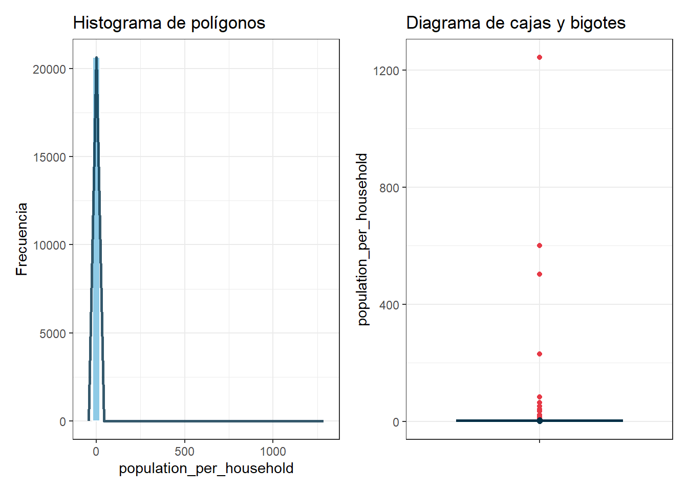
Podemos observar el mismo patrón de sesgo extremo hacia la derecha, con una concentración muy marcada de los datos cerca de 0 (la inmensa mayoría de los bloques censales tiene entre 1 y 5 personas por hogar aproximadamente, lo cual es un valor demográficamente esperable). Seguidamente, podemos notar en el diagrama de cajas un valor atípico particularmente extremo, cercano a 1.200 personas por hogar, además de otros valores más moderados alrededor de 250-600. Está claro que ese valor de 1.200 es prácticamente imposible en la realidad para un solo hogar, lo cual sugiere que se trata de un bloque censal con un número de hogares registrado erróneamente bajo (posiblemente 1), más que de una situación demográfica real. En síntesis, la variable population_per_household está fuertemente concentrada en valores bajos y razonables, pero contiene al menos un caso que amerita revisión antes de continuar con el modelado, ya que podría tratarse de un error de captura de datos.